#Case Study 02 - Final Project
Youtube Video Presenation at: https://youtu.be/g9Bf-9vVnF4
CaseStudy 2 Github Repository website: https://github.com/adebouse/Case-Study-2.git
Github website: adebouse.github.io
Introduction:
As a representative of DDS Analytics, I will focus my analysis on identifying varaibles a company can focus on to improve employee development and increase retention rates. Analyzing the frequencies of categorical variables and the medians of continuous variables for specific job titles we hope to identify key predictors that identify employees who are likely to remain and those who will leave/be fired.
Summary:
We discovered that Overtime, Stock Option and Job Level had a strong correlation with predicting Attrition, and it was possible that those job position with turnover rates higher than the overall company could be due high levels of retirement.
library(readr)
library(tidyverse)## -- Attaching packages --------------------------------------- tidyverse 1.2.1 --## v ggplot2 3.2.1 v purrr 0.3.2
## v tibble 2.1.3 v dplyr 0.8.3
## v tidyr 1.0.0 v stringr 1.4.0
## v ggplot2 3.2.1 v forcats 0.4.0## -- Conflicts ------------------------------------------ tidyverse_conflicts() --
## x dplyr::filter() masks stats::filter()
## x dplyr::lag() masks stats::lag()library(GGally)## Registered S3 method overwritten by 'GGally':
## method from
## +.gg ggplot2##
## Attaching package: 'GGally'## The following object is masked from 'package:dplyr':
##
## nasalibrary(corrplot)## corrplot 0.84 loadedlibrary(DataExplorer)
library(e1071)
library(caret)## Loading required package: lattice##
## Attaching package: 'caret'## The following object is masked from 'package:purrr':
##
## liftlibrary(class)
library(GoodmanKruskal)
library(PerformanceAnalytics)## Loading required package: xts## Loading required package: zoo##
## Attaching package: 'zoo'## The following objects are masked from 'package:base':
##
## as.Date, as.Date.numeric## Registered S3 method overwritten by 'xts':
## method from
## as.zoo.xts zoo##
## Attaching package: 'xts'## The following objects are masked from 'package:dplyr':
##
## first, last##
## Attaching package: 'PerformanceAnalytics'## The following objects are masked from 'package:e1071':
##
## kurtosis, skewness## The following object is masked from 'package:graphics':
##
## legendlibrary(scales)##
## Attaching package: 'scales'## The following object is masked from 'package:purrr':
##
## discard## The following object is masked from 'package:readr':
##
## col_factor#Import CaseStudy2 dataset
CaseStudy2 <- read.csv("C:/Users/Antonio Debouse/Desktop/Doing Data Science/GitHub/Case-Study-2/CaseStudy2-data.csv")
#Check for missing data
sum(is.na(CaseStudy2))## [1] 0##No missing data
#Inspect dataset variables
str(CaseStudy2)## 'data.frame': 870 obs. of 36 variables:
## $ ID : int 1 2 3 4 5 6 7 8 9 10 ...
## $ Age : int 32 40 35 32 24 27 41 37 34 34 ...
## $ Attrition : Factor w/ 2 levels "No","Yes": 1 1 1 1 1 1 1 1 1 1 ...
## $ BusinessTravel : Factor w/ 3 levels "Non-Travel","Travel_Frequently",..: 3 3 2 3 2 2 3 3 3 2 ...
## $ DailyRate : int 117 1308 200 801 567 294 1283 309 1333 653 ...
## $ Department : Factor w/ 3 levels "Human Resources",..: 3 2 2 3 2 2 2 3 3 2 ...
## $ DistanceFromHome : int 13 14 18 1 2 10 5 10 10 10 ...
## $ Education : int 4 3 2 4 1 2 5 4 4 4 ...
## $ EducationField : Factor w/ 6 levels "Human Resources",..: 2 4 2 3 6 2 4 2 2 6 ...
## $ EmployeeCount : int 1 1 1 1 1 1 1 1 1 1 ...
## $ EmployeeNumber : int 859 1128 1412 2016 1646 733 1448 1105 1055 1597 ...
## $ EnvironmentSatisfaction : int 2 3 3 3 1 4 2 4 3 4 ...
## $ Gender : Factor w/ 2 levels "Female","Male": 2 2 2 1 1 2 2 1 1 2 ...
## $ HourlyRate : int 73 44 60 48 32 32 90 88 87 92 ...
## $ JobInvolvement : int 3 2 3 3 3 3 4 2 3 2 ...
## $ JobLevel : int 2 5 3 3 1 3 1 2 1 2 ...
## $ JobRole : Factor w/ 9 levels "Healthcare Representative",..: 8 6 5 8 7 5 7 8 9 1 ...
## $ JobSatisfaction : int 4 3 4 4 4 1 3 4 3 3 ...
## $ MaritalStatus : Factor w/ 3 levels "Divorced","Married",..: 1 3 3 2 3 1 2 1 2 2 ...
## $ MonthlyIncome : int 4403 19626 9362 10422 3760 8793 2127 6694 2220 5063 ...
## $ MonthlyRate : int 9250 17544 19944 24032 17218 4809 5561 24223 18410 15332 ...
## $ NumCompaniesWorked : int 2 1 2 1 1 1 2 2 1 1 ...
## $ Over18 : Factor w/ 1 level "Y": 1 1 1 1 1 1 1 1 1 1 ...
## $ OverTime : Factor w/ 2 levels "No","Yes": 1 1 1 1 2 1 2 2 2 1 ...
## $ PercentSalaryHike : int 11 14 11 19 13 21 12 14 19 14 ...
## $ PerformanceRating : int 3 3 3 3 3 4 3 3 3 3 ...
## $ RelationshipSatisfaction: int 3 1 3 3 3 3 1 3 4 2 ...
## $ StandardHours : int 80 80 80 80 80 80 80 80 80 80 ...
## $ StockOptionLevel : int 1 0 0 2 0 2 0 3 1 1 ...
## $ TotalWorkingYears : int 8 21 10 14 6 9 7 8 1 8 ...
## $ TrainingTimesLastYear : int 3 2 2 3 2 4 5 5 2 3 ...
## $ WorkLifeBalance : int 2 4 3 3 3 2 2 3 3 2 ...
## $ YearsAtCompany : int 5 20 2 14 6 9 4 1 1 8 ...
## $ YearsInCurrentRole : int 2 7 2 10 3 7 2 0 1 2 ...
## $ YearsSinceLastPromotion : int 0 4 2 5 1 1 0 0 0 7 ...
## $ YearsWithCurrManager : int 3 9 2 7 3 7 3 0 0 7 ...head(CaseStudy2)## ID Age Attrition BusinessTravel DailyRate Department
## 1 1 32 No Travel_Rarely 117 Sales
## 2 2 40 No Travel_Rarely 1308 Research & Development
## 3 3 35 No Travel_Frequently 200 Research & Development
## 4 4 32 No Travel_Rarely 801 Sales
## 5 5 24 No Travel_Frequently 567 Research & Development
## 6 6 27 No Travel_Frequently 294 Research & Development
## DistanceFromHome Education EducationField EmployeeCount EmployeeNumber
## 1 13 4 Life Sciences 1 859
## 2 14 3 Medical 1 1128
## 3 18 2 Life Sciences 1 1412
## 4 1 4 Marketing 1 2016
## 5 2 1 Technical Degree 1 1646
## 6 10 2 Life Sciences 1 733
## EnvironmentSatisfaction Gender HourlyRate JobInvolvement JobLevel
## 1 2 Male 73 3 2
## 2 3 Male 44 2 5
## 3 3 Male 60 3 3
## 4 3 Female 48 3 3
## 5 1 Female 32 3 1
## 6 4 Male 32 3 3
## JobRole JobSatisfaction MaritalStatus MonthlyIncome
## 1 Sales Executive 4 Divorced 4403
## 2 Research Director 3 Single 19626
## 3 Manufacturing Director 4 Single 9362
## 4 Sales Executive 4 Married 10422
## 5 Research Scientist 4 Single 3760
## 6 Manufacturing Director 1 Divorced 8793
## MonthlyRate NumCompaniesWorked Over18 OverTime PercentSalaryHike
## 1 9250 2 Y No 11
## 2 17544 1 Y No 14
## 3 19944 2 Y No 11
## 4 24032 1 Y No 19
## 5 17218 1 Y Yes 13
## 6 4809 1 Y No 21
## PerformanceRating RelationshipSatisfaction StandardHours
## 1 3 3 80
## 2 3 1 80
## 3 3 3 80
## 4 3 3 80
## 5 3 3 80
## 6 4 3 80
## StockOptionLevel TotalWorkingYears TrainingTimesLastYear WorkLifeBalance
## 1 1 8 3 2
## 2 0 21 2 4
## 3 0 10 2 3
## 4 2 14 3 3
## 5 0 6 2 3
## 6 2 9 4 2
## YearsAtCompany YearsInCurrentRole YearsSinceLastPromotion
## 1 5 2 0
## 2 20 7 4
## 3 2 2 2
## 4 14 10 5
## 5 6 3 1
## 6 9 7 1
## YearsWithCurrManager
## 1 3
## 2 9
## 3 2
## 4 7
## 5 3
## 6 7#Change varibles to factors
names <- c('Education','EnvironmentSatisfaction','JobInvolvement','JobLevel', 'JobSatisfaction','PerformanceRating','RelationshipSatisfaction','StockOptionLevel','WorkLifeBalance')
#Change character variables to factors
CaseStudy2[,names] <- lapply(CaseStudy2[,names] , factor)
str(CaseStudy2)## 'data.frame': 870 obs. of 36 variables:
## $ ID : int 1 2 3 4 5 6 7 8 9 10 ...
## $ Age : int 32 40 35 32 24 27 41 37 34 34 ...
## $ Attrition : Factor w/ 2 levels "No","Yes": 1 1 1 1 1 1 1 1 1 1 ...
## $ BusinessTravel : Factor w/ 3 levels "Non-Travel","Travel_Frequently",..: 3 3 2 3 2 2 3 3 3 2 ...
## $ DailyRate : int 117 1308 200 801 567 294 1283 309 1333 653 ...
## $ Department : Factor w/ 3 levels "Human Resources",..: 3 2 2 3 2 2 2 3 3 2 ...
## $ DistanceFromHome : int 13 14 18 1 2 10 5 10 10 10 ...
## $ Education : Factor w/ 5 levels "1","2","3","4",..: 4 3 2 4 1 2 5 4 4 4 ...
## $ EducationField : Factor w/ 6 levels "Human Resources",..: 2 4 2 3 6 2 4 2 2 6 ...
## $ EmployeeCount : int 1 1 1 1 1 1 1 1 1 1 ...
## $ EmployeeNumber : int 859 1128 1412 2016 1646 733 1448 1105 1055 1597 ...
## $ EnvironmentSatisfaction : Factor w/ 4 levels "1","2","3","4": 2 3 3 3 1 4 2 4 3 4 ...
## $ Gender : Factor w/ 2 levels "Female","Male": 2 2 2 1 1 2 2 1 1 2 ...
## $ HourlyRate : int 73 44 60 48 32 32 90 88 87 92 ...
## $ JobInvolvement : Factor w/ 4 levels "1","2","3","4": 3 2 3 3 3 3 4 2 3 2 ...
## $ JobLevel : Factor w/ 5 levels "1","2","3","4",..: 2 5 3 3 1 3 1 2 1 2 ...
## $ JobRole : Factor w/ 9 levels "Healthcare Representative",..: 8 6 5 8 7 5 7 8 9 1 ...
## $ JobSatisfaction : Factor w/ 4 levels "1","2","3","4": 4 3 4 4 4 1 3 4 3 3 ...
## $ MaritalStatus : Factor w/ 3 levels "Divorced","Married",..: 1 3 3 2 3 1 2 1 2 2 ...
## $ MonthlyIncome : int 4403 19626 9362 10422 3760 8793 2127 6694 2220 5063 ...
## $ MonthlyRate : int 9250 17544 19944 24032 17218 4809 5561 24223 18410 15332 ...
## $ NumCompaniesWorked : int 2 1 2 1 1 1 2 2 1 1 ...
## $ Over18 : Factor w/ 1 level "Y": 1 1 1 1 1 1 1 1 1 1 ...
## $ OverTime : Factor w/ 2 levels "No","Yes": 1 1 1 1 2 1 2 2 2 1 ...
## $ PercentSalaryHike : int 11 14 11 19 13 21 12 14 19 14 ...
## $ PerformanceRating : Factor w/ 2 levels "3","4": 1 1 1 1 1 2 1 1 1 1 ...
## $ RelationshipSatisfaction: Factor w/ 4 levels "1","2","3","4": 3 1 3 3 3 3 1 3 4 2 ...
## $ StandardHours : int 80 80 80 80 80 80 80 80 80 80 ...
## $ StockOptionLevel : Factor w/ 4 levels "0","1","2","3": 2 1 1 3 1 3 1 4 2 2 ...
## $ TotalWorkingYears : int 8 21 10 14 6 9 7 8 1 8 ...
## $ TrainingTimesLastYear : int 3 2 2 3 2 4 5 5 2 3 ...
## $ WorkLifeBalance : Factor w/ 4 levels "1","2","3","4": 2 4 3 3 3 2 2 3 3 2 ...
## $ YearsAtCompany : int 5 20 2 14 6 9 4 1 1 8 ...
## $ YearsInCurrentRole : int 2 7 2 10 3 7 2 0 1 2 ...
## $ YearsSinceLastPromotion : int 0 4 2 5 1 1 0 0 0 7 ...
## $ YearsWithCurrManager : int 3 9 2 7 3 7 3 0 0 7 ...#Reorder columns with factors and integers grouped together, eliminate unneeded columns
CaseStudy2_reorg <- CaseStudy2[,c(4,6,8,9,12,13,15:19,24,26,27,29,32,2,5,7,14,20,21,22,25,30,31,33:36,3)]
view(CaseStudy2_reorg)
str(CaseStudy2_reorg)## 'data.frame': 870 obs. of 31 variables:
## $ BusinessTravel : Factor w/ 3 levels "Non-Travel","Travel_Frequently",..: 3 3 2 3 2 2 3 3 3 2 ...
## $ Department : Factor w/ 3 levels "Human Resources",..: 3 2 2 3 2 2 2 3 3 2 ...
## $ Education : Factor w/ 5 levels "1","2","3","4",..: 4 3 2 4 1 2 5 4 4 4 ...
## $ EducationField : Factor w/ 6 levels "Human Resources",..: 2 4 2 3 6 2 4 2 2 6 ...
## $ EnvironmentSatisfaction : Factor w/ 4 levels "1","2","3","4": 2 3 3 3 1 4 2 4 3 4 ...
## $ Gender : Factor w/ 2 levels "Female","Male": 2 2 2 1 1 2 2 1 1 2 ...
## $ JobInvolvement : Factor w/ 4 levels "1","2","3","4": 3 2 3 3 3 3 4 2 3 2 ...
## $ JobLevel : Factor w/ 5 levels "1","2","3","4",..: 2 5 3 3 1 3 1 2 1 2 ...
## $ JobRole : Factor w/ 9 levels "Healthcare Representative",..: 8 6 5 8 7 5 7 8 9 1 ...
## $ JobSatisfaction : Factor w/ 4 levels "1","2","3","4": 4 3 4 4 4 1 3 4 3 3 ...
## $ MaritalStatus : Factor w/ 3 levels "Divorced","Married",..: 1 3 3 2 3 1 2 1 2 2 ...
## $ OverTime : Factor w/ 2 levels "No","Yes": 1 1 1 1 2 1 2 2 2 1 ...
## $ PerformanceRating : Factor w/ 2 levels "3","4": 1 1 1 1 1 2 1 1 1 1 ...
## $ RelationshipSatisfaction: Factor w/ 4 levels "1","2","3","4": 3 1 3 3 3 3 1 3 4 2 ...
## $ StockOptionLevel : Factor w/ 4 levels "0","1","2","3": 2 1 1 3 1 3 1 4 2 2 ...
## $ WorkLifeBalance : Factor w/ 4 levels "1","2","3","4": 2 4 3 3 3 2 2 3 3 2 ...
## $ Age : int 32 40 35 32 24 27 41 37 34 34 ...
## $ DailyRate : int 117 1308 200 801 567 294 1283 309 1333 653 ...
## $ DistanceFromHome : int 13 14 18 1 2 10 5 10 10 10 ...
## $ HourlyRate : int 73 44 60 48 32 32 90 88 87 92 ...
## $ MonthlyIncome : int 4403 19626 9362 10422 3760 8793 2127 6694 2220 5063 ...
## $ MonthlyRate : int 9250 17544 19944 24032 17218 4809 5561 24223 18410 15332 ...
## $ NumCompaniesWorked : int 2 1 2 1 1 1 2 2 1 1 ...
## $ PercentSalaryHike : int 11 14 11 19 13 21 12 14 19 14 ...
## $ TotalWorkingYears : int 8 21 10 14 6 9 7 8 1 8 ...
## $ TrainingTimesLastYear : int 3 2 2 3 2 4 5 5 2 3 ...
## $ YearsAtCompany : int 5 20 2 14 6 9 4 1 1 8 ...
## $ YearsInCurrentRole : int 2 7 2 10 3 7 2 0 1 2 ...
## $ YearsSinceLastPromotion : int 0 4 2 5 1 1 0 0 0 7 ...
## $ YearsWithCurrManager : int 3 9 2 7 3 7 3 0 0 7 ...
## $ Attrition : Factor w/ 2 levels "No","Yes": 1 1 1 1 1 1 1 1 1 1 ...#plot Overall Attrition frequency
CaseStudy2_reorg %>% ggplot(aes(x=Attrition, fill =Attrition))+
geom_bar(aes(y = (..count..)/sum(..count..)))+
geom_text(aes(y = ((..count..)/sum(..count..)), label = scales::percent((..count..)/sum(..count..))), stat = "count", vjust = -0.25) +
scale_y_continuous(labels = percent) +
ggtitle("Frequency of Attrition Chart")+
ylab("Percentage")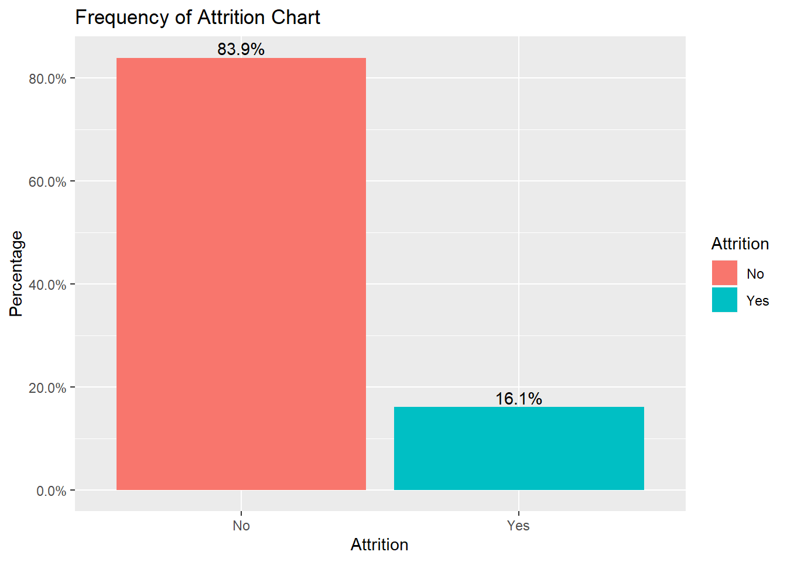
The company has retained only 16% of employees with 84% having exited the company; therefore, my target is to create a model with an accuracy of greater than 84% since that is the accuracy I would get by guessing “no” everytime.
#Identify any trends specific to any job role
##Sum of Observations for each Job Role
print(CaseStudy2_reorg %>%
group_by(JobRole) %>%
summarize(count= n()) %>%
arrange(desc(count)))## # A tibble: 9 x 2
## JobRole count
## <fct> <int>
## 1 Sales Executive 200
## 2 Research Scientist 172
## 3 Laboratory Technician 153
## 4 Manufacturing Director 87
## 5 Healthcare Representative 76
## 6 Sales Representative 53
## 7 Manager 51
## 8 Research Director 51
## 9 Human Resources 27##Barchart(count) for job roles
CaseStudy2_reorg %>% ggplot(aes(x= JobRole, fill = JobRole)) +
geom_bar() +
coord_flip()+
geom_text(aes(label=..count..),stat = "count",hjust = -0.25)+
ggtitle("Chart of Job Roles Sums")+
theme(legend.position = "none")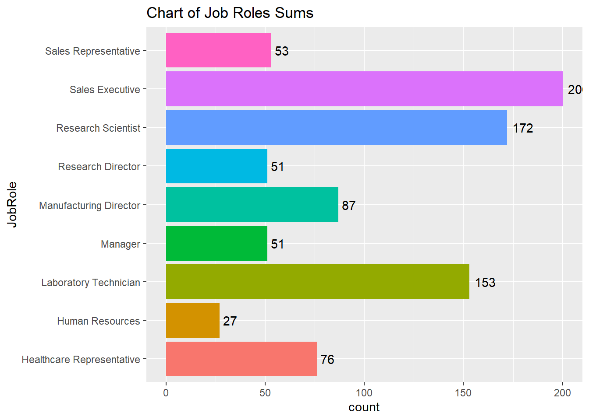
##Barchart(percentage) for job roles
CaseStudy2_reorg %>% ggplot(aes(x=JobRole, fill =JobRole))+
geom_bar(aes(y = (..count..)/sum(..count..)))+
geom_text(aes(y = ((..count..)/sum(..count..)), label = scales::percent((..count..)/sum(..count..))), stat = "count", hjust = -0.25) +
scale_y_continuous(labels = percent) +
ggtitle("JobRole Percentage Breakout Chart")+
ylab("Percentage")+
theme(legend.position = "none")+
coord_flip()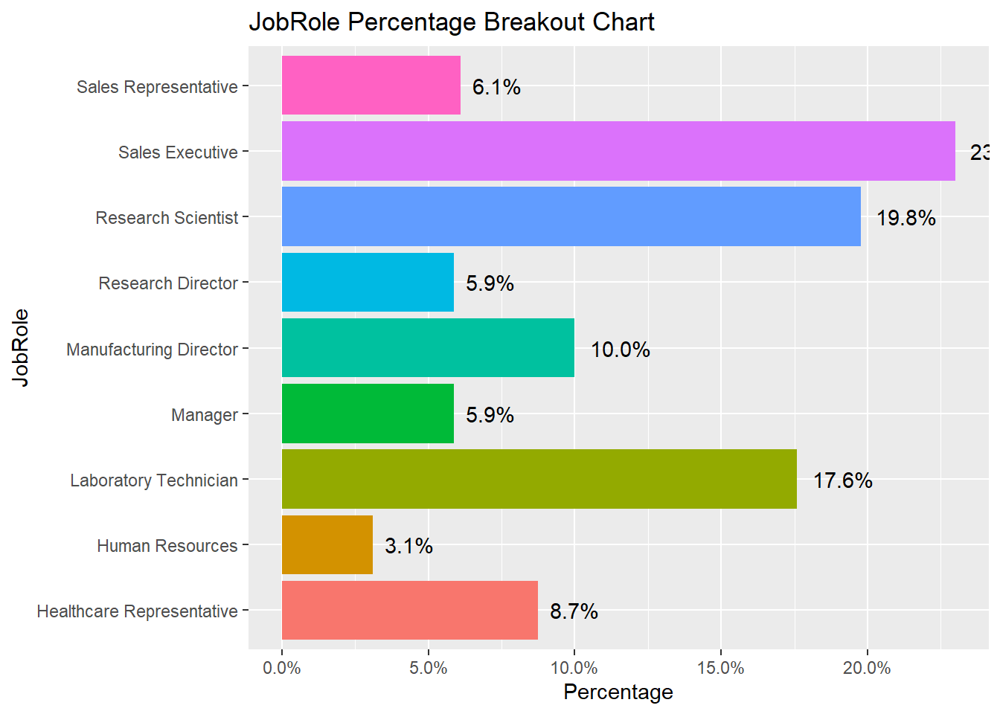
##Create bar chart with Attrition percentages grouped by JobRole
CaseStudy2_reorg %>% ggplot(aes(x=JobRole, fill =Attrition))+
geom_bar(aes(y = (..count..)/sum(..count..)))+
geom_text(aes(y = ((..count..)/sum(..count..)), label = scales::percent((..count..)/sum(..count..)), vjust = -0.25), stat = "count") +
scale_y_continuous(labels = percent) +
ggtitle("Frequency of Attrition Chart")+
ylab("Percentage")+
theme(axis.text.x = element_text(angle = 45, hjust = 1))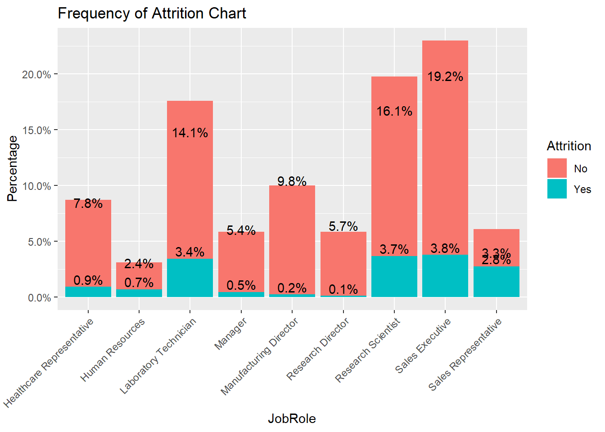
##Create Frequency table for Attrition grouped by JobRole
JobRoleAttrition_Frequency <- table(CaseStudy2_reorg$JobRole,CaseStudy2_reorg$Attrition)
##Feed JobRoleAttrition frequency table to prop.table() to produce relative percentages
JobRoleAttrition_Percentages <-round(prop.table(JobRoleAttrition_Frequency,margin = 1),2)
#Place table into dataframe
dataframecovert <- as.data.frame(JobRoleAttrition_Percentages)
dataframecovert$Freq <- dataframecovert$Freq * 100
#Change column names
colnames(dataframecovert) <- c("Job Title", "Attrition","Freq")
view(dataframecovert)
#Statistical Summary of Attrition = No, group by JobRole
dataframecovert %>% filter(Attrition == "No") %>%
summary(dataframecovert$Freq) ## Warning in if (length(ll) > maxsum) {: the condition has length > 1 and
## only the first element will be used
## Warning in if (length(ll) > maxsum) {: the condition has length > 1 and
## only the first element will be used## Job Title Attrition Freq
## Healthcare Representative:1 No :9 Min. :55.00
## Human Resources :1 Yes:0 1st Qu.:80.00
## Laboratory Technician :1 Median :84.00
## Manager :1 Mean :83.89
## Manufacturing Director :1 3rd Qu.:92.00
## Research Director :1 Max. :98.00
## Research Scientist :1
## Sales Executive :1
## Sales Representative :1#Standard deviation of Attrition = No, group by JobRole
dataframecovert %>% filter(Attrition == "No") %>%
mutate(standev = sd(Freq)) ## Job Title Attrition Freq standev
## 1 Healthcare Representative No 89 13.14767
## 2 Human Resources No 78 13.14767
## 3 Laboratory Technician No 80 13.14767
## 4 Manager No 92 13.14767
## 5 Manufacturing Director No 98 13.14767
## 6 Research Director No 98 13.14767
## 7 Research Scientist No 81 13.14767
## 8 Sales Executive No 84 13.14767
## 9 Sales Representative No 55 13.14767#Create a column chart with relative percentage of Attrition grouped by JobRole
dataframecovert %>% ggplot(aes(x=`Job Title`, fill =Attrition,y=Freq))+
geom_col()+
geom_text(aes(label=Freq,),position = position_stack(vjust = 0.5))+
theme(axis.text.x = element_text(angle = 45, hjust = 1))+
ggtitle("Percentage of Attrition Grouped by Job Tiltle")+
ylab("Percentage")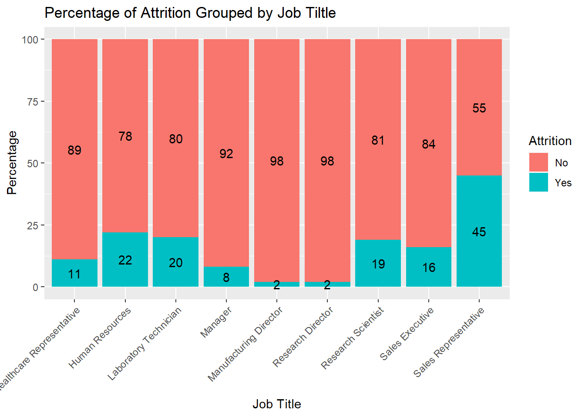
###Create Frequency table for EducationField, Grouped by JobRole and sub-grouped by Attrition (yes/no)
###ftable(CaseStudy2_reorg$JobRole,CaseStudy2_reorg$Attrition,CaseStudy2_reorg$EducationField)##Create Frequency table for BusinessTravel grouped by JobRole
JobRole_BusinessTravel_Frequency <- table(CaseStudy2_reorg$JobRole,CaseStudy2_reorg$BusinessTravel)
##Feed JobRoleBusinessTravel frequency table to prop.table() to produce relative percentages
JobRole_BusinessTravel_Percentages <-round(prop.table(JobRole_BusinessTravel_Frequency,margin = 1),2)
#Place table into dataframe
dataframecovert <- as.data.frame(JobRole_BusinessTravel_Percentages)
dataframecovert$Freq <- dataframecovert$Freq * 100
#Change column names
colnames(dataframecovert) <- c("Job Title", "BusinessTravel","Freq")
view(dataframecovert)
#Create a column chart with relative percentage of BusinessTravel grouped by JobRole
dataframecovert %>% ggplot(aes(x=`Job Title`, fill =BusinessTravel,y=Freq))+
geom_col()+
geom_text(aes(label=Freq,),position = position_stack(vjust = 0.5))+
theme(axis.text.x = element_text(angle = 45, hjust = 1))+
ggtitle("Percentage of BusinessTravel Grouped by Job Tiltle")+
ylab("Percentage")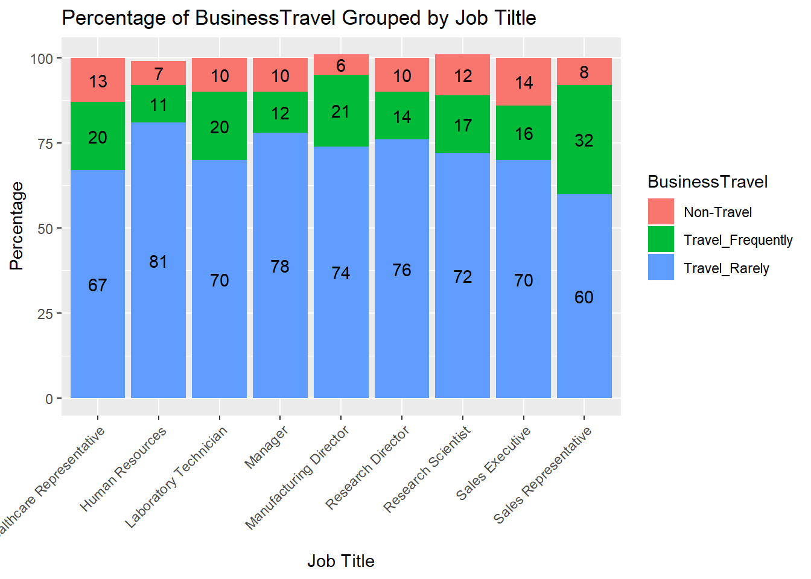
##Create Frequency table for Education grouped by JobRole
JobRole_Education_Frequency <- table(CaseStudy2_reorg$JobRole,CaseStudy2_reorg$Education)
##Feed JobRole_Education frequency table to prop.table() to produce relative percentages
JobRole_Education_Percentages <-round(prop.table(JobRole_Education_Frequency,margin = 1),2)
#Place table into dataframe
dataframecovert <- as.data.frame(JobRole_Education_Percentages)
dataframecovert$Freq <- dataframecovert$Freq * 100
#Change column names
colnames(dataframecovert) <- c("Job Title", "Education","Freq")
view(dataframecovert)
#Create a column chart with relative percentage of Education grouped by JobRole
dataframecovert %>% ggplot(aes(x=`Job Title`, fill =Education,y=Freq))+
geom_col()+
geom_text(aes(label=Freq,),position = position_stack(vjust = 0.5))+
theme(axis.text.x = element_text(angle = 45, hjust = 1))+
ggtitle("Percentage of Education Grouped by Job Tiltle")+
ylab("Percentage")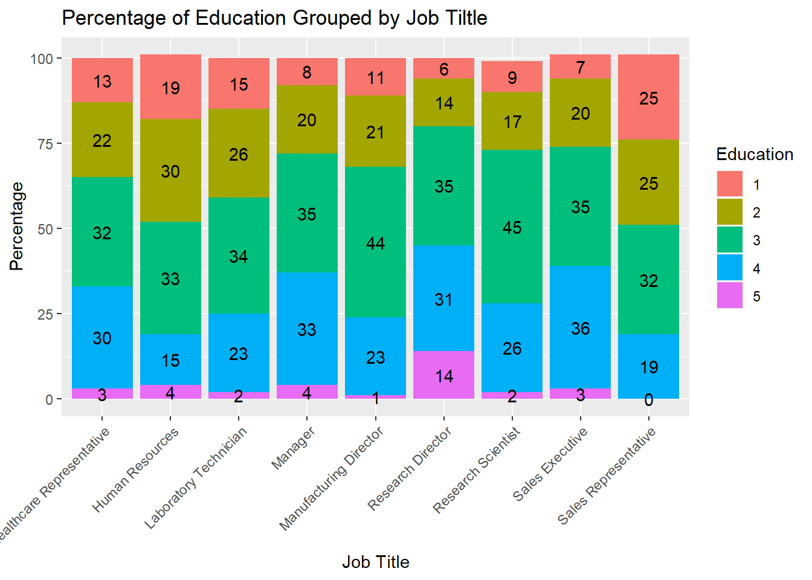
##Create Frequency table for EducationField grouped by JobRole
JobRole_EducationField_Frequency <- table(CaseStudy2_reorg$JobRole,CaseStudy2_reorg$EducationField)
##Feed JobRole_EducationField frequency table to prop.table() to produce relative percentages
JobRole_EducationField_Percentages <-round(prop.table(JobRole_EducationField_Frequency,margin = 1),2)
#Place table into dataframe
dataframecovert <- as.data.frame(JobRole_EducationField_Percentages)
dataframecovert$Freq <- dataframecovert$Freq * 100
#Change column names
colnames(dataframecovert) <- c("Job Title", "EducationField","Freq")
#Create a column chart with relative percentage of EducationField grouped by JobRole
dataframecovert %>% ggplot(aes(x=`Job Title`, fill =EducationField,y=Freq))+
geom_col()+
geom_text(aes(label=Freq,),position = position_stack(vjust = 0.5))+
theme(axis.text.x = element_text(angle = 45, hjust = 1))+
ggtitle("Percentage of EducationField Grouped by Job Tiltle")+
ylab("Percentage")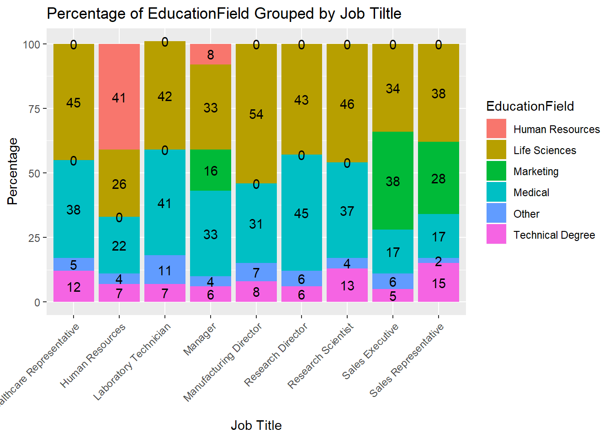
##Create Frequency table for EnvironSatisfaction grouped by JobRole
JobRole_EnvironSatisfaction_Frequency <- table(CaseStudy2_reorg$JobRole,CaseStudy2_reorg$EnvironmentSatisfaction)
##Feed JobRole_EnvironSatisfaction frequency table to prop.table() to produce relative percentages
JobRole_EnvironSatisfaction_Percentages <-round(prop.table(JobRole_EnvironSatisfaction_Frequency,margin = 1),2)
#Place table into dataframe
dataframecovert <- as.data.frame(JobRole_EnvironSatisfaction_Percentages)
dataframecovert$Freq <- dataframecovert$Freq * 100
#Change column names
colnames(dataframecovert) <- c("Job Title", "EnvironSatisfaction","Freq")
#Create a column chart with relative percentage of EnvironSatisfaction grouped by JobRole
dataframecovert %>% ggplot(aes(x=`Job Title`, fill =EnvironSatisfaction,y=Freq))+
geom_col()+
geom_text(aes(label=Freq,),position = position_stack(vjust = 0.5))+
theme(axis.text.x = element_text(angle = 45, hjust = 1))+
ggtitle("Percentage of EnvironSatisfaction Grouped by Job Tiltle")+
ylab("Percentage")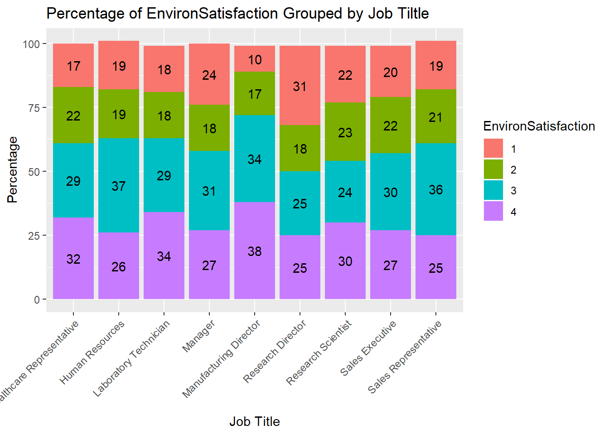
##Create Frequency table for JobInvolvement grouped by JobRole
JobRole_JobInvolvement_Frequency <- table(CaseStudy2_reorg$JobRole,CaseStudy2_reorg$JobInvolvement)
##Feed JobRole_JobInvolvement frequency table to prop.table() to produce relative percentages
JobRole_JobInvolvement_Percentages <-round(prop.table(JobRole_JobInvolvement_Frequency,margin = 1),2)
#Place table into dataframe
dataframecovert <- as.data.frame(JobRole_JobInvolvement_Percentages)
dataframecovert$Freq <- dataframecovert$Freq * 100
#Change column names
colnames(dataframecovert) <- c("Job Title", "JobInvolvement","Freq")
#Create a column chart with relative percentage of JobInvolvement grouped by JobRole
dataframecovert %>% ggplot(aes(x=`Job Title`, fill =JobInvolvement,y=Freq))+
geom_col()+
geom_text(aes(label=Freq,),position = position_stack(vjust = 0.5))+
theme(axis.text.x = element_text(angle = 45, hjust = 1))+
ggtitle("Percentage of JobInvolvement Grouped by Job Tiltle")+
ylab("Percentage")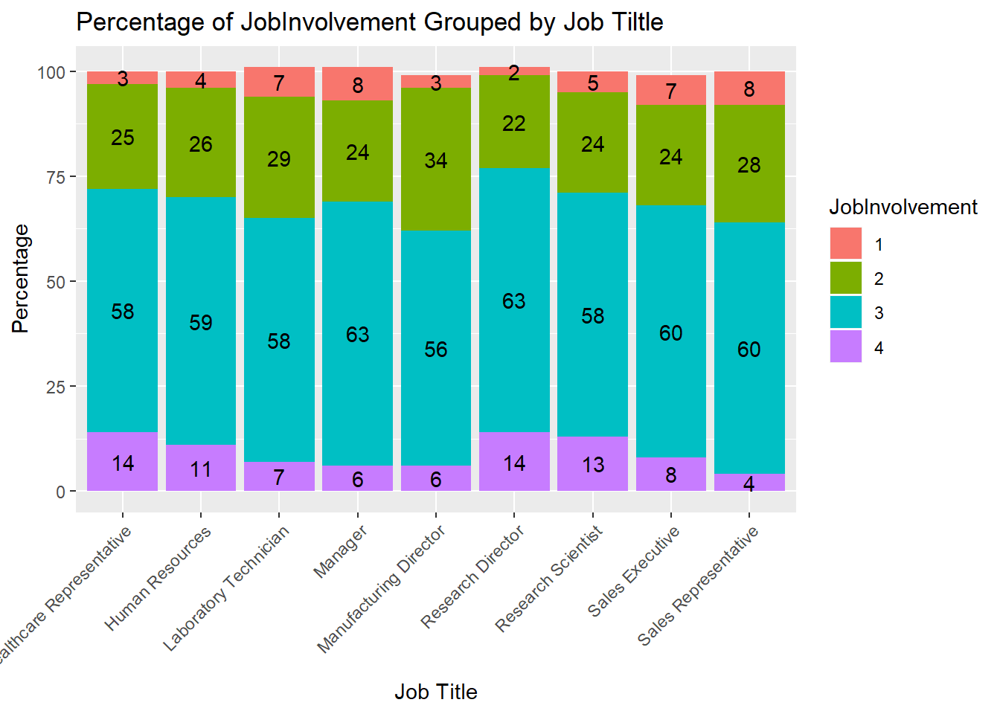
##Create Frequency table for MaritalStatus grouped by JobRole
JobRole_MaritalStatus_Frequency <- table(CaseStudy2_reorg$JobRole,CaseStudy2_reorg$MaritalStatus)
##Feed JobRole_MaritalStatus frequency table to prop.table() to produce relative percentages
JobRole_MaritalStatus_Percentages <-round(prop.table(JobRole_MaritalStatus_Frequency,margin = 1),2)
#Place table into dataframe
dataframecovert <- as.data.frame(JobRole_MaritalStatus_Percentages)
dataframecovert$Freq <- dataframecovert$Freq * 100
#Change column names
colnames(dataframecovert) <- c("Job Title", "MaritalStatus","Freq")
#Create a column chart with relative percentage of MaritalStatus grouped by JobRole
dataframecovert %>% ggplot(aes(x=`Job Title`, fill =MaritalStatus,y=Freq))+
geom_col()+
geom_text(aes(label=Freq,),position = position_stack(vjust = 0.5))+
theme(axis.text.x = element_text(angle = 45, hjust = 1))+
ggtitle("Percentage of MaritalStatus Grouped by Job Tiltle")+
ylab("Percentage")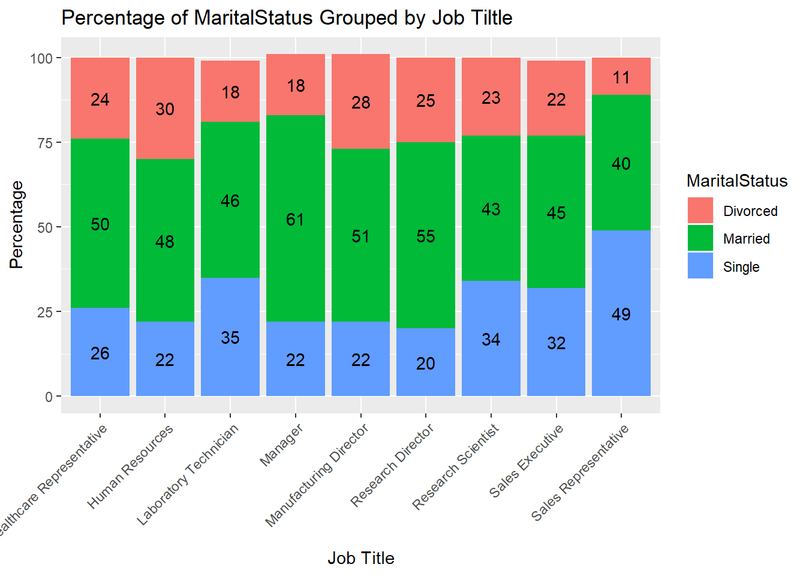
##Create Frequency table for Overtime grouped by JobRole
JobRole_Overtime_Frequency <- table(CaseStudy2_reorg$JobRole,CaseStudy2_reorg$OverTime)
##Feed JobRole_Overtime frequency table to prop.table() to produce relative percentages
JobRole_Overtime_Percentages <-round(prop.table(JobRole_Overtime_Frequency,margin = 1),2)
#Place table into dataframe
dataframecovert <- as.data.frame(JobRole_Overtime_Percentages)
dataframecovert$Freq <- dataframecovert$Freq * 100
#Change column names
colnames(dataframecovert) <- c("Job Title", "Overtime","Freq")
#Create a column chart with relative percentage of Overtime grouped by JobRole
dataframecovert %>% ggplot(aes(x=`Job Title`, fill =Overtime,y=Freq))+
geom_col()+
geom_text(aes(label=Freq,),position = position_stack(vjust = 0.5))+
theme(axis.text.x = element_text(angle = 45, hjust = 1))+
ggtitle("Percentage of Overtime Grouped by Job Tiltle")+
ylab("Percentage")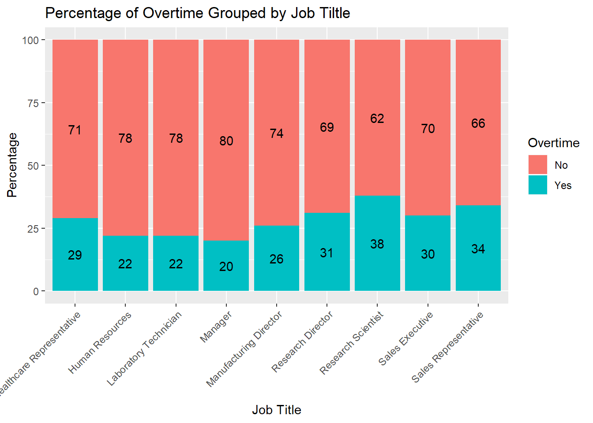
##Create Frequency table for PerformanceRating grouped by JobRole
JobRole_PerformanceRating_Frequency <- table(CaseStudy2_reorg$JobRole,CaseStudy2_reorg$PerformanceRating)
##Feed JobRole_PerformanceRating frequency table to prop.table() to produce relative percentages
JobRole_PerformanceRating_Percentages <-round(prop.table(JobRole_PerformanceRating_Frequency,margin = 1),2)
#Place table into dataframe
dataframecovert <- as.data.frame(JobRole_PerformanceRating_Percentages)
dataframecovert$Freq <- dataframecovert$Freq * 100
#Change column names
colnames(dataframecovert) <- c("Job Title", "PerformanceRating","Freq")
#Create a column chart with relative percentage of PerformanceRating grouped by JobRole
dataframecovert %>% ggplot(aes(x=`Job Title`, fill =PerformanceRating,y=Freq))+
geom_col()+
geom_text(aes(label=Freq,),position = position_stack(vjust = 0.5))+
theme(axis.text.x = element_text(angle = 45, hjust = 1))+
ggtitle("Percentage of PerformanceRating Grouped by Job Tiltle")+
ylab("Percentage")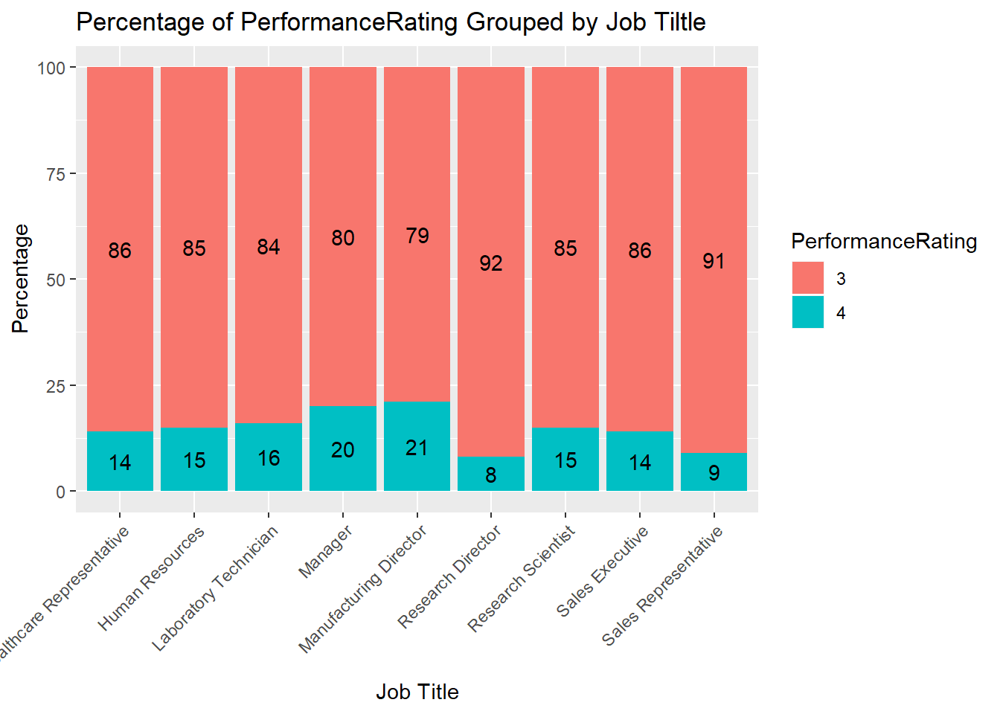
##Create Frequency table for RelationshipSatisfaction grouped by JobRole
JobRole_RelationshipSatisfaction_Frequency <- table(CaseStudy2_reorg$JobRole,CaseStudy2_reorg$RelationshipSatisfaction
)
##Feed JobRole_RelationshipSatisfaction frequency table to prop.table() to produce relative percentages
JobRole_RelationshipSatisfaction_Percentages <-round(prop.table(JobRole_RelationshipSatisfaction_Frequency,margin = 1),2)
#Place table into dataframe
dataframecovert <- as.data.frame(JobRole_RelationshipSatisfaction_Percentages)
dataframecovert$Freq <- dataframecovert$Freq * 100
#Change column names
colnames(dataframecovert) <- c("Job Title", "RelationshipSatisfaction","Freq")
#Create a column chart with relative percentage of RelationshipSatisfaction grouped by JobRole
dataframecovert %>% ggplot(aes(x=`Job Title`, fill =RelationshipSatisfaction,y=Freq))+
geom_col()+
geom_text(aes(label=Freq,),position = position_stack(vjust = 0.5))+
theme(axis.text.x = element_text(angle = 45, hjust = 1))+
ggtitle("Percentage of RelationshipSatisfaction Grouped by Job Tiltle")+
ylab("Percentage")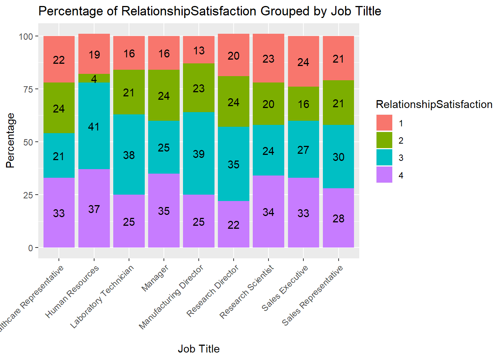
##Create Frequency table for StockOptionLevel grouped by JobRole
JobRole_StockOptionLevel_Frequency <- table(CaseStudy2_reorg$JobRole,CaseStudy2_reorg$StockOptionLevel
)
##Feed JobRole_StockOptionLevel frequency table to prop.table() to produce relative percentages
JobRole_StockOptionLevel_Percentages <-round(prop.table(JobRole_StockOptionLevel_Frequency,margin = 1),2)
#Place table into dataframe
dataframecovert <- as.data.frame(JobRole_StockOptionLevel_Percentages)
dataframecovert$Freq <- dataframecovert$Freq * 100
#Change column names
colnames(dataframecovert) <- c("Job Title", "StockOptionLevel","Freq")
#Create a column chart with relative percentage of StockOptionLevel grouped by JobRole
dataframecovert %>% ggplot(aes(x=`Job Title`, fill =StockOptionLevel,y=Freq))+
geom_col()+
geom_text(aes(label=Freq,),position = position_stack(vjust = 0.5))+
theme(axis.text.x = element_text(angle = 45, hjust = 1))+
ggtitle("Percentage of StockOptionLevel Grouped by Job Tiltle")+
ylab("Percentage")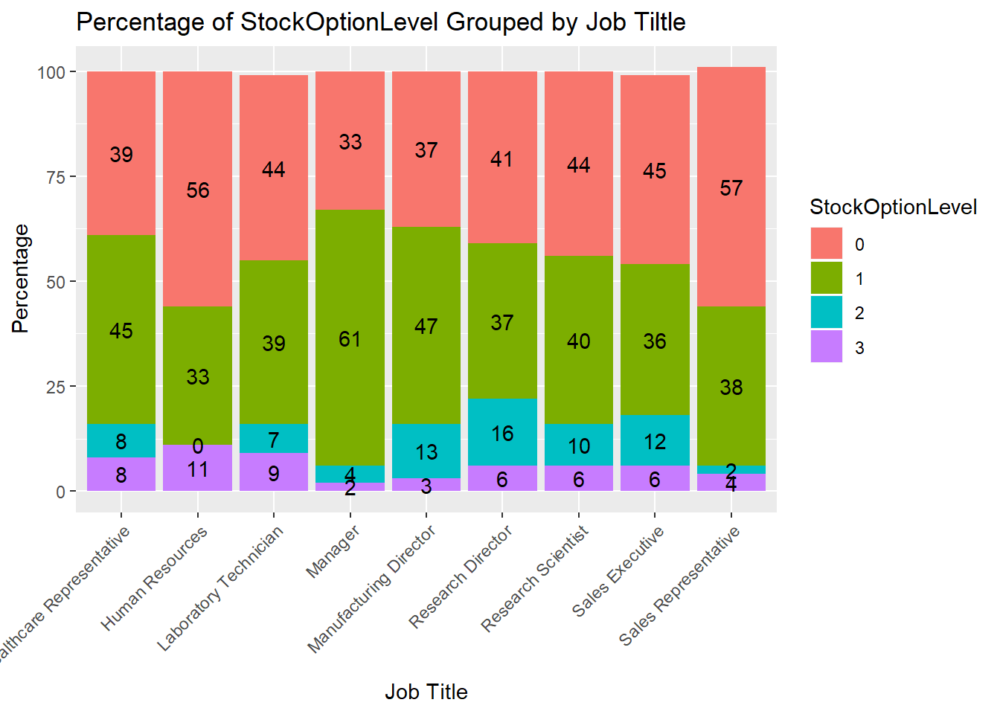
##Create Frequency table for WorkLifeBalance grouped by JobRole
JobRole_WorkLifeBalance_Frequency <- table(CaseStudy2_reorg$JobRole,CaseStudy2_reorg$WorkLifeBalance
)
##Feed JobRole_WorkLifeBalance frequency table to prop.table() to produce relative percentages
JobRole_WorkLifeBalance_Percentages <-round(prop.table(JobRole_WorkLifeBalance_Frequency,margin = 1),2)
#Place table into dataframe
dataframecovert <- as.data.frame(JobRole_WorkLifeBalance_Percentages)
dataframecovert$Freq <- dataframecovert$Freq * 100
#Change column names
colnames(dataframecovert) <- c("Job Title", "WorkLifeBalance","Freq")
#Create a column chart with relative percentage of WorkLifeBalance grouped by JobRole
dataframecovert %>% ggplot(aes(x=`Job Title`, fill =WorkLifeBalance,y=Freq))+
geom_col()+
geom_text(aes(label=Freq,),position = position_stack(vjust = 0.5))+
theme(axis.text.x = element_text(angle = 45, hjust = 1))+
ggtitle("Percentage of WorkLifeBalance Grouped by Job Tiltle")+
ylab("Percentage")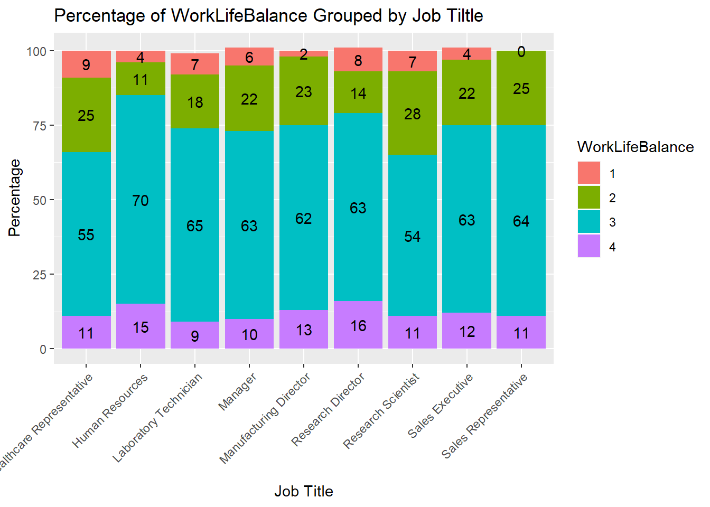
##Statistical Summary of Continuous Variables grouped by JobRole
##medians of continuous variables grouped by JobRole
MediansofContinousVars <- CaseStudy2_reorg %>% group_by(JobRole) %>%
summarise(Median_Age = median(Age),
Median_DailyRate = median(DailyRate),
Median_DistanceFromHome = median(DistanceFromHome),
Median_HourlyRate = median(HourlyRate),
Median_MonthlyIncome = median(MonthlyIncome),
Median_MonthlyRate = median(MonthlyRate),
Median_NumCompaniesWorked = median(NumCompaniesWorked),
Median_PercentSalaryHike = median(PercentSalaryHike),
Median_TotalWorkingYears = median(TotalWorkingYears),
Median_TrainTimesLastYear = median(TrainingTimesLastYear),
Median_YearsAtCompany = median(YearsAtCompany),
Median_YearsINCurrentRole = median(YearsInCurrentRole),
Median_YearsSinceLastPromotion = median(YearsSinceLastPromotion),
Median_YearsWithCurrManager = median(YearsWithCurrManager))
summary(MediansofContinousVars)## JobRole Median_Age Median_DailyRate
## Healthcare Representative:1 Min. :31.00 Min. :688.0
## Human Resources :1 1st Qu.:34.00 1st Qu.:782.0
## Laboratory Technician :1 Median :35.00 Median :829.0
## Manager :1 Mean :36.89 Mean :818.5
## Manufacturing Director :1 3rd Qu.:38.00 3rd Qu.:852.5
## Research Director :1 Max. :47.00 Max. :956.5
## (Other) :3
## Median_DistanceFromHome Median_HourlyRate Median_MonthlyIncome
## Min. :3.000 Min. :58 Min. : 2610
## 1st Qu.:7.000 1st Qu.:61 1st Qu.: 2774
## Median :7.000 Median :66 Median : 6222
## Mean :6.778 Mean :65 Mean : 7096
## 3rd Qu.:8.000 3rd Qu.:69 3rd Qu.: 6796
## Max. :8.000 Max. :70 Max. :17174
##
## Median_MonthlyRate Median_NumCompaniesWorked Median_PercentSalaryHike
## Min. :11585 Min. :1.000 Min. :14.00
## 1st Qu.:13137 1st Qu.:1.000 1st Qu.:14.00
## Median :13556 Median :2.000 Median :14.00
## Mean :14047 Mean :1.778 Mean :14.22
## 3rd Qu.:14394 3rd Qu.:2.000 3rd Qu.:14.00
## Max. :16616 Max. :3.000 Max. :15.00
##
## Median_TotalWorkingYears Median_TrainTimesLastYear Median_YearsAtCompany
## Min. : 3.00 Min. :2.000 Min. : 2.000
## 1st Qu.: 7.00 1st Qu.:3.000 1st Qu.: 4.000
## Median :10.00 Median :3.000 Median : 7.000
## Mean :11.11 Mean :2.889 Mean : 6.389
## 3rd Qu.:11.00 3rd Qu.:3.000 3rd Qu.: 7.000
## Max. :24.00 Max. :3.000 Max. :13.000
##
## Median_YearsINCurrentRole Median_YearsSinceLastPromotion
## Min. :2.000 Min. :1.000
## 1st Qu.:2.000 1st Qu.:1.000
## Median :4.000 Median :1.000
## Mean :4.111 Mean :1.222
## 3rd Qu.:6.000 3rd Qu.:1.000
## Max. :7.000 Max. :3.000
##
## Median_YearsWithCurrManager
## Min. :2.000
## 1st Qu.:2.000
## Median :4.000
## Mean :3.778
## 3rd Qu.:5.000
## Max. :7.000
## #Medians for Healthcare Rep
MediansofHCrepVars <- CaseStudy2_reorg %>% group_by(JobRole=="Healthcare Representative") %>%
summarise(Median_Age = median(Age),
Median_DailyRate = median(DailyRate),
Median_DistanceFromHome = median(DistanceFromHome),
Median_HourlyRate = median(HourlyRate),
Median_MonthlyIncome = median(MonthlyIncome),
Median_MonthlyRate = median(MonthlyRate),
Median_NumCompaniesWorked = median(NumCompaniesWorked),
Median_PercentSalaryHike = median(PercentSalaryHike),
Median_TotalWorkingYears = median(TotalWorkingYears),
Median_TrainTimesLastYear = median(TrainingTimesLastYear),
Median_YearsAtCompany = median(YearsAtCompany),
Median_YearsINCurrentRole = median(YearsInCurrentRole),
Median_YearsSinceLastPromotion = median(YearsSinceLastPromotion),
Median_YearsWithCurrManager = median(YearsWithCurrManager))
summary(MediansofHCrepVars)## JobRole == "Healthcare Representative" Median_Age Median_DailyRate
## Mode :logical Min. :35.00 Min. :813.0
## FALSE:1 1st Qu.:35.75 1st Qu.:848.9
## TRUE :1 Median :36.50 Median :884.8
## Mean :36.50 Mean :884.8
## 3rd Qu.:37.25 3rd Qu.:920.6
## Max. :38.00 Max. :956.5
## Median_DistanceFromHome Median_HourlyRate Median_MonthlyIncome
## Min. :7.00 Min. :66.00 Min. :4714
## 1st Qu.:7.25 1st Qu.:66.75 1st Qu.:5234
## Median :7.50 Median :67.50 Median :5755
## Mean :7.50 Mean :67.50 Mean :5755
## 3rd Qu.:7.75 3rd Qu.:68.25 3rd Qu.:6276
## Max. :8.00 Max. :69.00 Max. :6796
## Median_MonthlyRate Median_NumCompaniesWorked Median_PercentSalaryHike
## Min. :14022 Min. :1.00 Min. :14
## 1st Qu.:14095 1st Qu.:1.25 1st Qu.:14
## Median :14167 Median :1.50 Median :14
## Mean :14167 Mean :1.50 Mean :14
## 3rd Qu.:14240 3rd Qu.:1.75 3rd Qu.:14
## Max. :14312 Max. :2.00 Max. :14
## Median_TotalWorkingYears Median_TrainTimesLastYear Median_YearsAtCompany
## Min. : 9.0 Min. :3 Min. :5.0
## 1st Qu.: 9.5 1st Qu.:3 1st Qu.:5.5
## Median :10.0 Median :3 Median :6.0
## Mean :10.0 Mean :3 Mean :6.0
## 3rd Qu.:10.5 3rd Qu.:3 3rd Qu.:6.5
## Max. :11.0 Max. :3 Max. :7.0
## Median_YearsINCurrentRole Median_YearsSinceLastPromotion
## Min. :3.0 Min. :1
## 1st Qu.:3.5 1st Qu.:1
## Median :4.0 Median :1
## Mean :4.0 Mean :1
## 3rd Qu.:4.5 3rd Qu.:1
## Max. :5.0 Max. :1
## Median_YearsWithCurrManager
## Min. :3.00
## 1st Qu.:3.25
## Median :3.50
## Mean :3.50
## 3rd Qu.:3.75
## Max. :4.00#Medians for Human Resources
MediansofHR <- CaseStudy2_reorg %>% group_by(JobRole=="Human Resources") %>%
summarise(Median_Age = median(Age),
Median_DailyRate = median(DailyRate),
Median_DistanceFromHome = median(DistanceFromHome),
Median_HourlyRate = median(HourlyRate),
Median_MonthlyIncome = median(MonthlyIncome),
Median_MonthlyRate = median(MonthlyRate),
Median_NumCompaniesWorked = median(NumCompaniesWorked),
Median_PercentSalaryHike = median(PercentSalaryHike),
Median_TotalWorkingYears = median(TotalWorkingYears),
Median_TrainTimesLastYear = median(TrainingTimesLastYear),
Median_YearsAtCompany = median(YearsAtCompany),
Median_YearsINCurrentRole = median(YearsInCurrentRole),
Median_YearsSinceLastPromotion = median(YearsSinceLastPromotion),
Median_YearsWithCurrManager = median(YearsWithCurrManager))
summary(MediansofHR)## JobRole == "Human Resources" Median_Age Median_DailyRate
## Mode :logical Min. :33.0 Min. :817
## FALSE:1 1st Qu.:33.5 1st Qu.:820
## TRUE :1 Median :34.0 Median :823
## Mean :34.0 Mean :823
## 3rd Qu.:34.5 3rd Qu.:826
## Max. :35.0 Max. :829
## Median_DistanceFromHome Median_HourlyRate Median_MonthlyIncome
## Min. :7.00 Min. :58 Min. :2742
## 1st Qu.:7.25 1st Qu.:60 1st Qu.:3317
## Median :7.50 Median :62 Median :3892
## Mean :7.50 Mean :62 Mean :3892
## 3rd Qu.:7.75 3rd Qu.:64 3rd Qu.:4467
## Max. :8.00 Max. :66 Max. :5042
## Median_MonthlyRate Median_NumCompaniesWorked Median_PercentSalaryHike
## Min. :11585 Min. :1.00 Min. :14.00
## 1st Qu.:12208 1st Qu.:1.25 1st Qu.:14.25
## Median :12830 Median :1.50 Median :14.50
## Mean :12830 Mean :1.50 Mean :14.50
## 3rd Qu.:13452 3rd Qu.:1.75 3rd Qu.:14.75
## Max. :14075 Max. :2.00 Max. :15.00
## Median_TotalWorkingYears Median_TrainTimesLastYear Median_YearsAtCompany
## Min. : 6 Min. :3 Min. :4.00
## 1st Qu.: 7 1st Qu.:3 1st Qu.:4.25
## Median : 8 Median :3 Median :4.50
## Mean : 8 Mean :3 Mean :4.50
## 3rd Qu.: 9 3rd Qu.:3 3rd Qu.:4.75
## Max. :10 Max. :3 Max. :5.00
## Median_YearsINCurrentRole Median_YearsSinceLastPromotion
## Min. :2.00 Min. :1
## 1st Qu.:2.25 1st Qu.:1
## Median :2.50 Median :1
## Mean :2.50 Mean :1
## 3rd Qu.:2.75 3rd Qu.:1
## Max. :3.00 Max. :1
## Median_YearsWithCurrManager
## Min. :2.00
## 1st Qu.:2.25
## Median :2.50
## Mean :2.50
## 3rd Qu.:2.75
## Max. :3.00#Medians for Laboratory Technician
MediansofLabtech <- CaseStudy2_reorg %>% group_by(JobRole=="Laboratory Technician") %>%
summarise(Median_Age = median(Age),
Median_DailyRate = median(DailyRate),
Median_DistanceFromHome = median(DistanceFromHome),
Median_HourlyRate = median(HourlyRate),
Median_MonthlyIncome = median(MonthlyIncome),
Median_MonthlyRate = median(MonthlyRate),
Median_NumCompaniesWorked = median(NumCompaniesWorked),
Median_PercentSalaryHike = median(PercentSalaryHike),
Median_TotalWorkingYears = median(TotalWorkingYears),
Median_TrainTimesLastYear = median(TrainingTimesLastYear),
Median_YearsAtCompany = median(YearsAtCompany),
Median_YearsINCurrentRole = median(YearsInCurrentRole),
Median_YearsSinceLastPromotion = median(YearsSinceLastPromotion),
Median_YearsWithCurrManager = median(YearsWithCurrManager))
summary(MediansofLabtech)## JobRole == "Laboratory Technician" Median_Age Median_DailyRate
## Mode :logical Min. :34.0 Min. :813.0
## FALSE:1 1st Qu.:34.5 1st Qu.:814.5
## TRUE :1 Median :35.0 Median :816.0
## Mean :35.0 Mean :816.0
## 3rd Qu.:35.5 3rd Qu.:817.5
## Max. :36.0 Max. :819.0
## Median_DistanceFromHome Median_HourlyRate Median_MonthlyIncome
## Min. :7 Min. :64.0 Min. :2867
## 1st Qu.:7 1st Qu.:64.5 1st Qu.:3519
## Median :7 Median :65.0 Median :4172
## Mean :7 Mean :65.0 Mean :4172
## 3rd Qu.:7 3rd Qu.:65.5 3rd Qu.:4824
## Max. :7 Max. :66.0 Max. :5476
## Median_MonthlyRate Median_NumCompaniesWorked Median_PercentSalaryHike
## Min. :13556 Min. :1.00 Min. :14
## 1st Qu.:13728 1st Qu.:1.25 1st Qu.:14
## Median :13899 Median :1.50 Median :14
## Mean :13899 Mean :1.50 Mean :14
## 3rd Qu.:14070 3rd Qu.:1.75 3rd Qu.:14
## Max. :14242 Max. :2.00 Max. :14
## Median_TotalWorkingYears Median_TrainTimesLastYear Median_YearsAtCompany
## Min. : 8.0 Min. :3 Min. :4.00
## 1st Qu.: 8.5 1st Qu.:3 1st Qu.:4.25
## Median : 9.0 Median :3 Median :4.50
## Mean : 9.0 Mean :3 Mean :4.50
## 3rd Qu.: 9.5 3rd Qu.:3 3rd Qu.:4.75
## Max. :10.0 Max. :3 Max. :5.00
## Median_YearsINCurrentRole Median_YearsSinceLastPromotion
## Min. :2.00 Min. :1
## 1st Qu.:2.25 1st Qu.:1
## Median :2.50 Median :1
## Mean :2.50 Mean :1
## 3rd Qu.:2.75 3rd Qu.:1
## Max. :3.00 Max. :1
## Median_YearsWithCurrManager
## Min. :2.00
## 1st Qu.:2.25
## Median :2.50
## Mean :2.50
## 3rd Qu.:2.75
## Max. :3.00#Medians for Manager
MediansofManager <- CaseStudy2_reorg %>% group_by(JobRole== "Manager") %>%
summarise(Median_Age = median(Age),
Median_DailyRate = median(DailyRate),
Median_DistanceFromHome = median(DistanceFromHome),
Median_HourlyRate = median(HourlyRate),
Median_MonthlyIncome = median(MonthlyIncome),
Median_MonthlyRate = median(MonthlyRate),
Median_NumCompaniesWorked = median(NumCompaniesWorked),
Median_PercentSalaryHike = median(PercentSalaryHike),
Median_TotalWorkingYears = median(TotalWorkingYears),
Median_TrainTimesLastYear = median(TrainingTimesLastYear),
Median_YearsAtCompany = median(YearsAtCompany),
Median_YearsINCurrentRole = median(YearsInCurrentRole),
Median_YearsSinceLastPromotion = median(YearsSinceLastPromotion),
Median_YearsWithCurrManager = median(YearsWithCurrManager))
summary(MediansofManager)## JobRole == "Manager" Median_Age Median_DailyRate
## Mode :logical Min. :35 Min. :688.0
## FALSE:1 1st Qu.:38 1st Qu.:722.8
## TRUE :1 Median :41 Median :757.5
## Mean :41 Mean :757.5
## 3rd Qu.:44 3rd Qu.:792.2
## Max. :47 Max. :827.0
## Median_DistanceFromHome Median_HourlyRate Median_MonthlyIncome
## Min. :3 Min. :66 Min. : 4735
## 1st Qu.:4 1st Qu.:67 1st Qu.: 7845
## Median :5 Median :68 Median :10954
## Mean :5 Mean :68 Mean :10954
## 3rd Qu.:6 3rd Qu.:69 3rd Qu.:14064
## Max. :7 Max. :70 Max. :17174
## Median_MonthlyRate Median_NumCompaniesWorked Median_PercentSalaryHike
## Min. :14034 Min. :1.0 Min. :14
## 1st Qu.:14680 1st Qu.:1.5 1st Qu.:14
## Median :15325 Median :2.0 Median :14
## Mean :15325 Mean :2.0 Mean :14
## 3rd Qu.:15970 3rd Qu.:2.5 3rd Qu.:14
## Max. :16616 Max. :3.0 Max. :14
## Median_TotalWorkingYears Median_TrainTimesLastYear Median_YearsAtCompany
## Min. : 9.00 Min. :3 Min. : 5
## 1st Qu.:12.75 1st Qu.:3 1st Qu.: 7
## Median :16.50 Median :3 Median : 9
## Mean :16.50 Mean :3 Mean : 9
## 3rd Qu.:20.25 3rd Qu.:3 3rd Qu.:11
## Max. :24.00 Max. :3 Max. :13
## Median_YearsINCurrentRole Median_YearsSinceLastPromotion
## Min. :3 Min. :1.0
## 1st Qu.:4 1st Qu.:1.5
## Median :5 Median :2.0
## Mean :5 Mean :2.0
## 3rd Qu.:6 3rd Qu.:2.5
## Max. :7 Max. :3.0
## Median_YearsWithCurrManager
## Min. :3
## 1st Qu.:4
## Median :5
## Mean :5
## 3rd Qu.:6
## Max. :7#Medians for Manufacturing Director
MediansofMD <- CaseStudy2_reorg %>% group_by(JobRole== "Manufacturing Director") %>%
summarise(Median_Age = median(Age),
Median_DailyRate = median(DailyRate),
Median_DistanceFromHome = median(DistanceFromHome),
Median_HourlyRate = median(HourlyRate),
Median_MonthlyIncome = median(MonthlyIncome),
Median_MonthlyRate = median(MonthlyRate),
Median_NumCompaniesWorked = median(NumCompaniesWorked),
Median_PercentSalaryHike = median(PercentSalaryHike),
Median_TotalWorkingYears = median(TotalWorkingYears),
Median_TrainTimesLastYear = median(TrainingTimesLastYear),
Median_YearsAtCompany = median(YearsAtCompany),
Median_YearsINCurrentRole = median(YearsInCurrentRole),
Median_YearsSinceLastPromotion = median(YearsSinceLastPromotion),
Median_YearsWithCurrManager = median(YearsWithCurrManager))
summary(MediansofMD)## JobRole == "Manufacturing Director" Median_Age Median_DailyRate
## Mode :logical Min. :35.00 Min. :813.0
## FALSE:1 1st Qu.:35.25 1st Qu.:823.5
## TRUE :1 Median :35.50 Median :834.0
## Mean :35.50 Mean :834.0
## 3rd Qu.:35.75 3rd Qu.:844.5
## Max. :36.00 Max. :855.0
## Median_DistanceFromHome Median_HourlyRate Median_MonthlyIncome
## Min. :7 Min. :61.00 Min. :4649
## 1st Qu.:7 1st Qu.:62.25 1st Qu.:5112
## Median :7 Median :63.50 Median :5574
## Mean :7 Mean :63.50 Mean :5574
## 3rd Qu.:7 3rd Qu.:64.75 3rd Qu.:6036
## Max. :7 Max. :66.00 Max. :6499
## Median_MonthlyRate Median_NumCompaniesWorked Median_PercentSalaryHike
## Min. :14004 Min. :2 Min. :14.00
## 1st Qu.:14102 1st Qu.:2 1st Qu.:14.25
## Median :14199 Median :2 Median :14.50
## Mean :14199 Mean :2 Mean :14.50
## 3rd Qu.:14296 3rd Qu.:2 3rd Qu.:14.75
## Max. :14394 Max. :2 Max. :15.00
## Median_TotalWorkingYears Median_TrainTimesLastYear Median_YearsAtCompany
## Min. : 9.00 Min. :2.00 Min. :5.0
## 1st Qu.: 9.25 1st Qu.:2.25 1st Qu.:5.5
## Median : 9.50 Median :2.50 Median :6.0
## Mean : 9.50 Mean :2.50 Mean :6.0
## 3rd Qu.: 9.75 3rd Qu.:2.75 3rd Qu.:6.5
## Max. :10.00 Max. :3.00 Max. :7.0
## Median_YearsINCurrentRole Median_YearsSinceLastPromotion
## Min. :3.00 Min. :1
## 1st Qu.:3.75 1st Qu.:1
## Median :4.50 Median :1
## Mean :4.50 Mean :1
## 3rd Qu.:5.25 3rd Qu.:1
## Max. :6.00 Max. :1
## Median_YearsWithCurrManager
## Min. :3.0
## 1st Qu.:3.5
## Median :4.0
## Mean :4.0
## 3rd Qu.:4.5
## Max. :5.0#Medians for Research Director
MediansofRD <- CaseStudy2_reorg %>% group_by(JobRole== "Research Director") %>%
summarise(Median_Age = median(Age),
Median_DailyRate = median(DailyRate),
Median_DistanceFromHome = median(DistanceFromHome),
Median_HourlyRate = median(HourlyRate),
Median_MonthlyIncome = median(MonthlyIncome),
Median_MonthlyRate = median(MonthlyRate),
Median_NumCompaniesWorked = median(NumCompaniesWorked),
Median_PercentSalaryHike = median(PercentSalaryHike),
Median_TotalWorkingYears = median(TotalWorkingYears),
Median_TrainTimesLastYear = median(TrainingTimesLastYear),
Median_YearsAtCompany = median(YearsAtCompany),
Median_YearsINCurrentRole = median(YearsInCurrentRole),
Median_YearsSinceLastPromotion = median(YearsSinceLastPromotion),
Median_YearsWithCurrManager = median(YearsWithCurrManager))
summary(MediansofRD)## JobRole == "Research Director" Median_Age Median_DailyRate
## Mode :logical Min. :35.00 Min. :782.0
## FALSE:1 1st Qu.:37.25 1st Qu.:792.2
## TRUE :1 Median :39.50 Median :802.5
## Mean :39.50 Mean :802.5
## 3rd Qu.:41.75 3rd Qu.:812.8
## Max. :44.00 Max. :823.0
## Median_DistanceFromHome Median_HourlyRate Median_MonthlyIncome
## Min. :7.00 Min. :60.0 Min. : 4735
## 1st Qu.:7.25 1st Qu.:61.5 1st Qu.: 7597
## Median :7.50 Median :63.0 Median :10460
## Mean :7.50 Mean :63.0 Mean :10460
## 3rd Qu.:7.75 3rd Qu.:64.5 3rd Qu.:13322
## Max. :8.00 Max. :66.0 Max. :16184
## Median_MonthlyRate Median_NumCompaniesWorked Median_PercentSalaryHike
## Min. :13934 Min. :1.0 Min. :14
## 1st Qu.:14524 1st Qu.:1.5 1st Qu.:14
## Median :15113 Median :2.0 Median :14
## Mean :15113 Mean :2.0 Mean :14
## 3rd Qu.:15702 3rd Qu.:2.5 3rd Qu.:14
## Max. :16292 Max. :3.0 Max. :14
## Median_TotalWorkingYears Median_TrainTimesLastYear Median_YearsAtCompany
## Min. : 9 Min. :3 Min. :5
## 1st Qu.:12 1st Qu.:3 1st Qu.:6
## Median :15 Median :3 Median :7
## Mean :15 Mean :3 Mean :7
## 3rd Qu.:18 3rd Qu.:3 3rd Qu.:8
## Max. :21 Max. :3 Max. :9
## Median_YearsINCurrentRole Median_YearsSinceLastPromotion
## Min. :3 Min. :1
## 1st Qu.:4 1st Qu.:1
## Median :5 Median :1
## Mean :5 Mean :1
## 3rd Qu.:6 3rd Qu.:1
## Max. :7 Max. :1
## Median_YearsWithCurrManager
## Min. :3.00
## 1st Qu.:3.75
## Median :4.50
## Mean :4.50
## 3rd Qu.:5.25
## Max. :6.00#Medians for Research Scientist
MediansofRS <- CaseStudy2_reorg %>% group_by(JobRole== "Research Scientist") %>%
summarise(Median_Age = median(Age),
Median_DailyRate = median(DailyRate),
Median_DistanceFromHome = median(DistanceFromHome),
Median_HourlyRate = median(HourlyRate),
Median_MonthlyIncome = median(MonthlyIncome),
Median_MonthlyRate = median(MonthlyRate),
Median_NumCompaniesWorked = median(NumCompaniesWorked),
Median_PercentSalaryHike = median(PercentSalaryHike),
Median_TotalWorkingYears = median(TotalWorkingYears),
Median_TrainTimesLastYear = median(TrainingTimesLastYear),
Median_YearsAtCompany = median(YearsAtCompany),
Median_YearsINCurrentRole = median(YearsInCurrentRole),
Median_YearsSinceLastPromotion = median(YearsSinceLastPromotion),
Median_YearsWithCurrManager = median(YearsWithCurrManager))
summary(MediansofRS)## JobRole == "Research Scientist" Median_Age Median_DailyRate
## Mode :logical Min. :34.0 Min. :813.0
## FALSE:1 1st Qu.:34.5 1st Qu.:818.4
## TRUE :1 Median :35.0 Median :823.8
## Mean :35.0 Mean :823.8
## 3rd Qu.:35.5 3rd Qu.:829.1
## Max. :36.0 Max. :834.5
## Median_DistanceFromHome Median_HourlyRate Median_MonthlyIncome
## Min. :7 Min. :65 Min. :2774
## 1st Qu.:7 1st Qu.:66 1st Qu.:3461
## Median :7 Median :67 Median :4148
## Mean :7 Mean :67 Mean :4148
## 3rd Qu.:7 3rd Qu.:68 3rd Qu.:4835
## Max. :7 Max. :69 Max. :5522
## Median_MonthlyRate Median_NumCompaniesWorked Median_PercentSalaryHike
## Min. :13040 Min. :1.00 Min. :14
## 1st Qu.:13346 1st Qu.:1.25 1st Qu.:14
## Median :13652 Median :1.50 Median :14
## Mean :13652 Mean :1.50 Mean :14
## 3rd Qu.:13957 3rd Qu.:1.75 3rd Qu.:14
## Max. :14263 Max. :2.00 Max. :14
## Median_TotalWorkingYears Median_TrainTimesLastYear Median_YearsAtCompany
## Min. : 7.00 Min. :3 Min. :4.500
## 1st Qu.: 7.75 1st Qu.:3 1st Qu.:4.875
## Median : 8.50 Median :3 Median :5.250
## Mean : 8.50 Mean :3 Mean :5.250
## 3rd Qu.: 9.25 3rd Qu.:3 3rd Qu.:5.625
## Max. :10.00 Max. :3 Max. :6.000
## Median_YearsINCurrentRole Median_YearsSinceLastPromotion
## Min. :2.00 Min. :1
## 1st Qu.:2.25 1st Qu.:1
## Median :2.50 Median :1
## Mean :2.50 Mean :1
## 3rd Qu.:2.75 3rd Qu.:1
## Max. :3.00 Max. :1
## Median_YearsWithCurrManager
## Min. :2.00
## 1st Qu.:2.25
## Median :2.50
## Mean :2.50
## 3rd Qu.:2.75
## Max. :3.00#Medians for Sales Executive
MediansofSalesExecutive <- CaseStudy2_reorg %>% group_by(JobRole== "Sales Executive") %>%
summarise(Median_Age = median(Age),
Median_DailyRate = median(DailyRate),
Median_DistanceFromHome = median(DistanceFromHome),
Median_HourlyRate = median(HourlyRate),
Median_MonthlyIncome = median(MonthlyIncome),
Median_MonthlyRate = median(MonthlyRate),
Median_NumCompaniesWorked = median(NumCompaniesWorked),
Median_PercentSalaryHike = median(PercentSalaryHike),
Median_TotalWorkingYears = median(TotalWorkingYears),
Median_TrainTimesLastYear = median(TrainingTimesLastYear),
Median_YearsAtCompany = median(YearsAtCompany),
Median_YearsINCurrentRole = median(YearsInCurrentRole),
Median_YearsSinceLastPromotion = median(YearsSinceLastPromotion),
Median_YearsWithCurrManager = median(YearsWithCurrManager))
summary(MediansofSalesExecutive)## JobRole == "Sales Executive" Median_Age Median_DailyRate
## Mode :logical Min. :35.00 Min. :813.0
## FALSE:1 1st Qu.:35.25 1st Qu.:822.9
## TRUE :1 Median :35.50 Median :832.8
## Mean :35.50 Mean :832.8
## 3rd Qu.:35.75 3rd Qu.:842.6
## Max. :36.00 Max. :852.5
## Median_DistanceFromHome Median_HourlyRate Median_MonthlyIncome
## Min. :7.00 Min. :66 Min. :4086
## 1st Qu.:7.25 1st Qu.:66 1st Qu.:4620
## Median :7.50 Median :66 Median :5154
## Mean :7.50 Mean :66 Mean :5154
## 3rd Qu.:7.75 3rd Qu.:66 3rd Qu.:5688
## Max. :8.00 Max. :66 Max. :6222
## Median_MonthlyRate Median_NumCompaniesWorked Median_PercentSalaryHike
## Min. :13493 Min. :1.00 Min. :14
## 1st Qu.:13678 1st Qu.:1.25 1st Qu.:14
## Median :13862 Median :1.50 Median :14
## Mean :13862 Mean :1.50 Mean :14
## 3rd Qu.:14047 3rd Qu.:1.75 3rd Qu.:14
## Max. :14232 Max. :2.00 Max. :14
## Median_TotalWorkingYears Median_TrainTimesLastYear Median_YearsAtCompany
## Min. : 9.00 Min. :3 Min. :5.0
## 1st Qu.: 9.25 1st Qu.:3 1st Qu.:5.5
## Median : 9.50 Median :3 Median :6.0
## Mean : 9.50 Mean :3 Mean :6.0
## 3rd Qu.: 9.75 3rd Qu.:3 3rd Qu.:6.5
## Max. :10.00 Max. :3 Max. :7.0
## Median_YearsINCurrentRole Median_YearsSinceLastPromotion
## Min. :2.0 Min. :1
## 1st Qu.:2.5 1st Qu.:1
## Median :3.0 Median :1
## Mean :3.0 Mean :1
## 3rd Qu.:3.5 3rd Qu.:1
## Max. :4.0 Max. :1
## Median_YearsWithCurrManager
## Min. :2.0
## 1st Qu.:2.5
## Median :3.0
## Mean :3.0
## 3rd Qu.:3.5
## Max. :4.0#Medians for Sales Representative
MediansofSalesRep <- CaseStudy2_reorg %>% group_by(JobRole== "Sales Representative") %>%
summarise(Median_Age = median(Age),
Median_DailyRate = median(DailyRate),
Median_DistanceFromHome = median(DistanceFromHome),
Median_HourlyRate = median(HourlyRate),
Median_MonthlyIncome = median(MonthlyIncome),
Median_MonthlyRate = median(MonthlyRate),
Median_NumCompaniesWorked = median(NumCompaniesWorked),
Median_PercentSalaryHike = median(PercentSalaryHike),
Median_TotalWorkingYears = median(TotalWorkingYears),
Median_TrainTimesLastYear = median(TrainingTimesLastYear),
Median_YearsAtCompany = median(YearsAtCompany),
Median_YearsINCurrentRole = median(YearsInCurrentRole),
Median_YearsSinceLastPromotion = median(YearsSinceLastPromotion),
Median_YearsWithCurrManager = median(YearsWithCurrManager))
summary(MediansofSalesRep)## JobRole == "Sales Representative" Median_Age Median_DailyRate
## Mode :logical Min. :31.00 Min. :756.0
## FALSE:1 1st Qu.:32.25 1st Qu.:772.8
## TRUE :1 Median :33.50 Median :789.5
## Mean :33.50 Mean :789.5
## 3rd Qu.:34.75 3rd Qu.:806.2
## Max. :36.00 Max. :823.0
## Median_DistanceFromHome Median_HourlyRate Median_MonthlyIncome
## Min. :5.0 Min. :66.0 Min. :2610
## 1st Qu.:5.5 1st Qu.:66.5 1st Qu.:3250
## Median :6.0 Median :67.0 Median :3890
## Mean :6.0 Mean :67.0 Mean :3890
## 3rd Qu.:6.5 3rd Qu.:67.5 3rd Qu.:4531
## Max. :7.0 Max. :68.0 Max. :5171
## Median_MonthlyRate Median_NumCompaniesWorked Median_PercentSalaryHike
## Min. :13137 Min. :1.00 Min. :14
## 1st Qu.:13372 1st Qu.:1.25 1st Qu.:14
## Median :13606 Median :1.50 Median :14
## Mean :13606 Mean :1.50 Mean :14
## 3rd Qu.:13840 3rd Qu.:1.75 3rd Qu.:14
## Max. :14075 Max. :2.00 Max. :14
## Median_TotalWorkingYears Median_TrainTimesLastYear Median_YearsAtCompany
## Min. : 3.00 Min. :3 Min. :2.00
## 1st Qu.: 4.75 1st Qu.:3 1st Qu.:2.75
## Median : 6.50 Median :3 Median :3.50
## Mean : 6.50 Mean :3 Mean :3.50
## 3rd Qu.: 8.25 3rd Qu.:3 3rd Qu.:4.25
## Max. :10.00 Max. :3 Max. :5.00
## Median_YearsINCurrentRole Median_YearsSinceLastPromotion
## Min. :2.00 Min. :1
## 1st Qu.:2.25 1st Qu.:1
## Median :2.50 Median :1
## Mean :2.50 Mean :1
## 3rd Qu.:2.75 3rd Qu.:1
## Max. :3.00 Max. :1
## Median_YearsWithCurrManager
## Min. :2.00
## 1st Qu.:2.25
## Median :2.50
## Mean :2.50
## 3rd Qu.:2.75
## Max. :3.00#Create function to calculate correlation and p-values
##Correlation matrix with p-values...see citation #1 below
cor.prob <- function (X, dfr = nrow(X) - 2) {
R <- cor(X, use="pairwise.complete.obs")
above <- row(R) < col(R)
r2 <- R[above]^2
Fstat <- r2 * dfr/(1 - r2)
R[above] <- 1 - pf(Fstat, 1, dfr)
R[row(R) == col(R)] <- NA
R
}
# Create a function to dump the cor.prob output to a 4 column matrix with row/column indices, correlation, and p-value.
##See citation #2 below
flattenSquareMatrix <- function(m) {
if( (class(m) != "matrix") | (nrow(m) != ncol(m))) stop("Must be a square matrix.")
if(!identical(rownames(m), colnames(m))) stop("Row and column names must be equal.")
ut <- upper.tri(m)
data.frame(Explanatory_Var = rownames(m)[row(m)[ut]],
Response_Var = rownames(m)[col(m)[ut]],
cor=t(m)[ut],
p=m[ut])
}
#Dummify all factor variables to use the correlation plot
Dummy <- dummyVars("~ .", data = CaseStudy2_reorg)
Case2Relab <- data.frame(predict(Dummy, newdata = CaseStudy2_reorg))
#Create correlation matrix with p-vales, then input into FlattenSquareMatrix to create a 4 column data frame
corMaster <- flattenSquareMatrix (cor.prob(Case2Relab))
#Check dataframe for 4 columns
print(head(corMaster,10))## Explanatory_Var Response_Var
## 1 BusinessTravel.Non.Travel BusinessTravel.Travel_Frequently
## 2 BusinessTravel.Non.Travel BusinessTravel.Travel_Rarely
## 3 BusinessTravel.Travel_Frequently BusinessTravel.Travel_Rarely
## 4 BusinessTravel.Non.Travel Department.Human.Resources
## 5 BusinessTravel.Travel_Frequently Department.Human.Resources
## 6 BusinessTravel.Travel_Rarely Department.Human.Resources
## 7 BusinessTravel.Non.Travel Department.Research...Development
## 8 BusinessTravel.Travel_Frequently Department.Research...Development
## 9 BusinessTravel.Travel_Rarely Department.Research...Development
## 10 Department.Human.Resources Department.Research...Development
## cor p
## 1 -0.163953848 1.162484e-06
## 2 -0.545038315 0.000000e+00
## 3 -0.737704638 0.000000e+00
## 4 -0.014727766 6.644296e-01
## 5 -0.035752635 2.921706e-01
## 6 0.040466056 2.331242e-01
## 7 -0.021073826 5.347550e-01
## 8 0.012067854 7.222512e-01
## 9 0.004165989 9.023424e-01
## 10 -0.276556318 1.110223e-16#Order correlation in descending order with descending absolute correlation value
corMaster_reorg <- corMaster[order(-abs(corMaster$cor)),]
#Show 10 highest absolute correlation values
print(head(corMaster_reorg,10))## Explanatory_Var Response_Var cor
## 253 Gender.Female Gender.Male -1.0000000
## 1225 OverTime.No OverTime.Yes -1.0000000
## 1326 PerformanceRating.3 PerformanceRating.4 -1.0000000
## 3160 Attrition.No Attrition.Yes -1.0000000
## 15 Department.Research...Development Department.Sales -0.9134546
## 532 Department.Human.Resources JobRole.Human.Resources 0.8741326
## 747 Department.Sales JobRole.Sales.Executive 0.8079481
## 2625 MonthlyIncome TotalWorkingYears 0.7785112
## 2850 YearsAtCompany YearsInCurrentRole 0.7761164
## 2536 PerformanceRating.3 PercentSalaryHike -0.7750532
## p
## 253 0
## 1225 0
## 1326 0
## 3160 0
## 15 0
## 532 0
## 747 0
## 2625 0
## 2850 0
## 2536 0#filter the Response_Var for only Attrition.No outcomes
AttritionCor <- subset(corMaster_reorg, Response_Var == 'Attrition.No')
print(head(AttritionCor,20))## Explanatory_Var Response_Var cor p
## 3052 OverTime.No Attrition.No 0.2720366 3.330669e-16
## 3053 OverTime.Yes Attrition.No -0.2720366 3.330669e-16
## 3060 StockOptionLevel.0 Attrition.No -0.2334910 3.086975e-12
## 3031 JobLevel.1 Attrition.No -0.2132391 2.100262e-10
## 3044 JobRole.Sales.Representative Attrition.No -0.2023348 1.724553e-09
## 3027 JobInvolvement.1 Attrition.No -0.1997631 2.786560e-09
## 3061 StockOptionLevel.1 Attrition.No 0.1917449 1.194532e-08
## 3051 MaritalStatus.Single Attrition.No -0.1807995 7.897151e-08
## 3076 TotalWorkingYears Attrition.No 0.1672061 7.058845e-07
## 3079 YearsInCurrentRole Attrition.No 0.1562157 3.665017e-06
## 3072 MonthlyIncome Attrition.No 0.1549150 4.421756e-06
## 3068 Age Attrition.No 0.1493836 9.657758e-06
## 3081 YearsWithCurrManager Attrition.No 0.1467822 1.381421e-05
## 3049 MaritalStatus.Divorced Attrition.No 0.1415828 2.774590e-05
## 3032 JobLevel.2 Attrition.No 0.1317950 9.666076e-05
## 3078 YearsAtCompany Attrition.No 0.1287541 1.400387e-04
## 3064 WorkLifeBalance.1 Attrition.No -0.1270842 1.710688e-04
## 3040 JobRole.Manufacturing.Director Attrition.No 0.1251222 2.157534e-04
## 3021 EnvironmentSatisfaction.1 Attrition.No -0.1124866 8.884423e-04
## 3062 StockOptionLevel.2 Attrition.No 0.1080209 1.418210e-03#filter the Response_Var for only Attrition.Yes outcomes
AttritionCor <- subset(corMaster_reorg, Response_Var == 'Attrition.Yes')
print(head(AttritionCor,10))## Explanatory_Var Response_Var cor p
## 3160 Attrition.No Attrition.Yes -1.0000000 0.000000e+00
## 3130 OverTime.No Attrition.Yes -0.2720366 3.330669e-16
## 3131 OverTime.Yes Attrition.Yes 0.2720366 3.330669e-16
## 3138 StockOptionLevel.0 Attrition.Yes 0.2334910 3.086975e-12
## 3109 JobLevel.1 Attrition.Yes 0.2132391 2.100262e-10
## 3122 JobRole.Sales.Representative Attrition.Yes 0.2023348 1.724553e-09
## 3105 JobInvolvement.1 Attrition.Yes 0.1997631 2.786560e-09
## 3139 StockOptionLevel.1 Attrition.Yes -0.1917449 1.194532e-08
## 3129 MaritalStatus.Single Attrition.Yes 0.1807995 7.897151e-08
## 3154 TotalWorkingYears Attrition.Yes -0.1672061 7.058845e-07Citation #1 for Correlation matrix of p-values:
Title: correlation matricies: getting p-values? Author: Bill Venables, Statistician, CMIS Environmetrics Project Date: Tue Jan 4 06:05:39 CET 2000 Availability: https://stat.ethz.ch/pipermail/r-help/2000-January/009758.html
Citation #2 for FlattenSquareMatrix Function:
Title: Exploring correlations with R using cor.prob and chart.Correlation Author: Stephen Turner Date: August 27, 2012 Availability: https://gist.github.com/stephenturner/3492773
#Create a model to classification model to predict attrition with sensitivty & specificity >= 60%
#Import dataset without Attrition
CaseStudyCompSet_NO_Attrition <- read.csv("C:/Users/Antonio Debouse/Desktop/Doing Data Science/GitHub/Case-Study-2/CaseStudy2CompSet No Attrition.csv")
str(CaseStudyCompSet_NO_Attrition)## 'data.frame': 300 obs. of 35 variables:
## $ ID : int 1171 1172 1173 1174 1175 1176 1177 1178 1179 1180 ...
## $ Age : int 35 33 26 55 29 51 52 39 31 31 ...
## $ BusinessTravel : Factor w/ 3 levels "Non-Travel","Travel_Frequently",..: 3 3 3 3 3 2 1 3 3 2 ...
## $ DailyRate : int 750 147 1330 1311 1246 1456 585 1387 1062 534 ...
## $ Department : Factor w/ 3 levels "Human Resources",..: 2 1 2 2 3 2 3 2 2 2 ...
## $ DistanceFromHome : int 28 2 21 2 19 1 29 10 24 20 ...
## $ Education : int 3 3 3 3 3 4 4 5 3 3 ...
## $ EducationField : Factor w/ 6 levels "Human Resources",..: 2 1 4 2 2 4 2 4 4 2 ...
## $ EmployeeCount : int 1 1 1 1 1 1 1 1 1 1 ...
## $ EmployeeNumber : int 1596 1207 1107 505 1497 145 2019 1618 1252 587 ...
## $ EnvironmentSatisfaction : int 2 2 1 3 3 1 1 2 3 1 ...
## $ Gender : Factor w/ 2 levels "Female","Male": 2 2 2 1 2 1 2 2 1 2 ...
## $ HourlyRate : int 46 99 37 97 77 30 40 76 96 66 ...
## $ JobInvolvement : int 4 3 3 3 2 2 3 3 2 3 ...
## $ JobLevel : int 2 1 1 4 2 3 1 2 2 3 ...
## $ JobRole : Factor w/ 9 levels "Healthcare Representative",..: 3 2 3 4 8 1 9 5 1 1 ...
## $ JobSatisfaction : int 3 3 3 4 3 1 4 1 1 3 ...
## $ MaritalStatus : Factor w/ 3 levels "Divorced","Married",..: 2 2 1 3 1 3 1 2 3 2 ...
## $ MonthlyIncome : int 3407 3600 2377 16659 8620 7484 3482 5377 6812 9824 ...
## $ MonthlyRate : int 25348 8429 19373 23258 23757 25796 19788 3835 17198 22908 ...
## $ NumCompaniesWorked : int 1 1 1 2 1 3 2 2 1 3 ...
## $ Over18 : Factor w/ 1 level "Y": 1 1 1 1 1 1 1 1 1 1 ...
## $ OverTime : Factor w/ 2 levels "No","Yes": 1 1 1 2 1 1 1 1 1 1 ...
## $ PercentSalaryHike : int 17 13 20 13 14 20 15 13 19 12 ...
## $ PerformanceRating : int 3 3 4 3 3 4 3 3 3 3 ...
## $ RelationshipSatisfaction: int 4 4 3 3 3 3 2 4 2 1 ...
## $ StandardHours : int 80 80 80 80 80 80 80 80 80 80 ...
## $ StockOptionLevel : int 2 1 1 0 2 0 2 3 0 0 ...
## $ TotalWorkingYears : int 10 5 1 30 10 23 16 10 10 12 ...
## $ TrainingTimesLastYear : int 3 2 0 2 3 1 3 3 2 2 ...
## $ WorkLifeBalance : int 2 3 2 3 3 2 2 3 3 3 ...
## $ YearsAtCompany : int 10 5 1 5 10 13 9 7 10 1 ...
## $ YearsInCurrentRole : int 9 4 1 4 7 12 8 7 9 0 ...
## $ YearsSinceLastPromotion : int 6 1 0 1 0 12 0 7 1 0 ...
## $ YearsWithCurrManager : int 8 4 0 2 4 8 0 7 8 0 ...#Change character variables to factors
CaseStudyCompSet_NO_Attrition[,names] <- lapply(CaseStudyCompSet_NO_Attrition[,names] , factor)
set.seed(12)
iterations = 100
masterAcc = matrix(nrow = iterations)
splitPerc = .7 #Training / Test split Percentage
for(j in 1:iterations)
{
trainIndices = sample(1:dim(CaseStudy2_reorg)[1],round(splitPerc * dim(CaseStudy2_reorg)[1]))
train = CaseStudy2_reorg[trainIndices,]
test = CaseStudy2_reorg[-trainIndices,]
model = naiveBayes(train[,c(12,15,8,9,7,11,25,28,21,17,30)],train$Attrition)
table(predict(model,test[,c(12,15,8,9,7,11,25,28,21,17,30)]),test$Attrition)
CM = confusionMatrix(table(predict(model,test[,c(12,15,8,9,7,11,25,28,21,17,30)]),test$Attrition))
masterAcc[j] = CM$overall[1]
}
MeanAcc = colMeans(masterAcc)
MeanAcc## [1] 0.7941379CM## Confusion Matrix and Statistics
##
##
## No Yes
## No 187 13
## Yes 38 23
##
## Accuracy : 0.8046
## 95% CI : (0.7512, 0.8509)
## No Information Rate : 0.8621
## P-Value [Acc > NIR] : 0.9960998
##
## Kappa : 0.3639
##
## Mcnemar's Test P-Value : 0.0007775
##
## Sensitivity : 0.8311
## Specificity : 0.6389
## Pos Pred Value : 0.9350
## Neg Pred Value : 0.3770
## Prevalence : 0.8621
## Detection Rate : 0.7165
## Detection Prevalence : 0.7663
## Balanced Accuracy : 0.7350
##
## 'Positive' Class : No
## #Input prediction into NO_Attrition dataset
AttritionPreds <- naiveBayes(CaseStudy2_reorg[,c(12,15,8,9,7,11,25,28,21,17,30)], CaseStudy2_reorg$Attrition)
CaseStudyCompSet_NO_Attrition$AttritionPreds = predict(AttritionPreds,CaseStudyCompSet_NO_Attrition)
#Create dataframe with ID and Attrition Predictions only
ID_AttritionPreds_Dataframe <- CaseStudyCompSet_NO_Attrition[,c("ID","AttritionPreds")]
ID_AttritionPreds_Dataframe## ID AttritionPreds
## 1 1171 No
## 2 1172 No
## 3 1173 No
## 4 1174 No
## 5 1175 No
## 6 1176 No
## 7 1177 No
## 8 1178 No
## 9 1179 No
## 10 1180 No
## 11 1181 No
## 12 1182 Yes
## 13 1183 No
## 14 1184 No
## 15 1185 No
## 16 1186 No
## 17 1187 No
## 18 1188 No
## 19 1189 No
## 20 1190 No
## 21 1191 Yes
## 22 1192 No
## 23 1193 No
## 24 1194 No
## 25 1195 No
## 26 1196 No
## 27 1197 No
## 28 1198 Yes
## 29 1199 No
## 30 1200 Yes
## 31 1201 Yes
## 32 1202 No
## 33 1203 No
## 34 1204 No
## 35 1205 Yes
## 36 1206 No
## 37 1207 No
## 38 1208 No
## 39 1209 No
## 40 1210 No
## 41 1211 No
## 42 1212 Yes
## 43 1213 No
## 44 1214 No
## 45 1215 Yes
## 46 1216 No
## 47 1217 No
## 48 1218 No
## 49 1219 No
## 50 1220 No
## 51 1221 No
## 52 1222 Yes
## 53 1223 No
## 54 1224 No
## 55 1225 No
## 56 1226 No
## 57 1227 Yes
## 58 1228 No
## 59 1229 No
## 60 1230 No
## 61 1231 No
## 62 1232 No
## 63 1233 Yes
## 64 1234 No
## 65 1235 No
## 66 1236 No
## 67 1237 No
## 68 1238 No
## 69 1239 No
## 70 1240 No
## 71 1241 No
## 72 1242 No
## 73 1243 No
## 74 1244 No
## 75 1245 No
## 76 1246 Yes
## 77 1247 No
## 78 1248 No
## 79 1249 No
## 80 1250 No
## 81 1251 No
## 82 1252 No
## 83 1253 No
## 84 1254 No
## 85 1255 No
## 86 1256 No
## 87 1257 No
## 88 1258 No
## 89 1259 No
## 90 1260 Yes
## 91 1261 No
## 92 1262 No
## 93 1263 Yes
## 94 1264 No
## 95 1265 No
## 96 1266 No
## 97 1267 No
## 98 1268 No
## 99 1269 Yes
## 100 1270 Yes
## 101 1271 No
## 102 1272 No
## 103 1273 No
## 104 1274 No
## 105 1275 Yes
## 106 1276 No
## 107 1277 No
## 108 1278 No
## 109 1279 Yes
## 110 1280 No
## 111 1281 No
## 112 1282 No
## 113 1283 No
## 114 1284 No
## 115 1285 No
## 116 1286 No
## 117 1287 No
## 118 1288 No
## 119 1289 Yes
## 120 1290 No
## 121 1291 No
## 122 1292 No
## 123 1293 No
## 124 1294 No
## 125 1295 No
## 126 1296 No
## 127 1297 Yes
## 128 1298 No
## 129 1299 No
## 130 1300 No
## 131 1301 No
## 132 1302 No
## 133 1303 No
## 134 1304 Yes
## 135 1305 No
## 136 1306 No
## 137 1307 No
## 138 1308 No
## 139 1309 Yes
## 140 1310 No
## 141 1311 No
## 142 1312 No
## 143 1313 No
## 144 1314 Yes
## 145 1315 No
## 146 1316 No
## 147 1317 Yes
## 148 1318 Yes
## 149 1319 Yes
## 150 1320 No
## 151 1321 No
## 152 1322 No
## 153 1323 No
## 154 1324 No
## 155 1325 Yes
## 156 1326 No
## 157 1327 No
## 158 1328 Yes
## 159 1329 Yes
## 160 1330 No
## 161 1331 No
## 162 1332 No
## 163 1333 Yes
## 164 1334 No
## 165 1335 No
## 166 1336 Yes
## 167 1337 No
## 168 1338 No
## 169 1339 No
## 170 1340 No
## 171 1341 Yes
## 172 1342 No
## 173 1343 No
## 174 1344 Yes
## 175 1345 No
## 176 1346 No
## 177 1347 No
## 178 1348 No
## 179 1349 No
## 180 1350 No
## 181 1351 Yes
## 182 1352 No
## 183 1353 No
## 184 1354 No
## 185 1355 No
## 186 1356 No
## 187 1357 No
## 188 1358 Yes
## 189 1359 No
## 190 1360 No
## 191 1361 No
## 192 1362 No
## 193 1363 No
## 194 1364 No
## 195 1365 Yes
## 196 1366 Yes
## 197 1367 No
## 198 1368 No
## 199 1369 No
## 200 1370 No
## 201 1371 No
## 202 1372 No
## 203 1373 No
## 204 1374 No
## 205 1375 No
## 206 1376 Yes
## 207 1377 No
## 208 1378 No
## 209 1379 No
## 210 1380 No
## 211 1381 Yes
## 212 1382 No
## 213 1383 No
## 214 1384 No
## 215 1385 No
## 216 1386 No
## 217 1387 No
## 218 1388 No
## 219 1389 No
## 220 1390 No
## 221 1391 No
## 222 1392 No
## 223 1393 No
## 224 1394 No
## 225 1395 No
## 226 1396 No
## 227 1397 Yes
## 228 1398 No
## 229 1399 Yes
## 230 1400 No
## 231 1401 No
## 232 1402 Yes
## 233 1403 No
## 234 1404 Yes
## 235 1405 No
## 236 1406 Yes
## 237 1407 Yes
## 238 1408 No
## 239 1409 No
## 240 1410 No
## 241 1411 Yes
## 242 1412 No
## 243 1413 No
## 244 1414 No
## 245 1415 No
## 246 1416 No
## 247 1417 Yes
## 248 1418 Yes
## 249 1419 No
## 250 1420 Yes
## 251 1421 Yes
## 252 1422 No
## 253 1423 No
## 254 1424 Yes
## 255 1425 No
## 256 1426 No
## 257 1427 No
## 258 1428 No
## 259 1429 Yes
## 260 1430 No
## 261 1431 No
## 262 1432 No
## 263 1433 No
## 264 1434 No
## 265 1435 No
## 266 1436 No
## 267 1437 No
## 268 1438 No
## 269 1439 Yes
## 270 1440 No
## 271 1441 No
## 272 1442 Yes
## 273 1443 No
## 274 1444 Yes
## 275 1445 Yes
## 276 1446 Yes
## 277 1447 No
## 278 1448 No
## 279 1449 No
## 280 1450 Yes
## 281 1451 No
## 282 1452 No
## 283 1453 No
## 284 1454 No
## 285 1455 No
## 286 1456 Yes
## 287 1457 No
## 288 1458 Yes
## 289 1459 No
## 290 1460 Yes
## 291 1461 No
## 292 1462 No
## 293 1463 No
## 294 1464 No
## 295 1465 Yes
## 296 1466 No
## 297 1467 No
## 298 1468 Yes
## 299 1469 No
## 300 1470 No#Save data to CSV file
write.table(ID_AttritionPreds_Dataframe,"Case2PredictionsDebouse_Attrition.csv",sep = ",",row.names = FALSE)
#Knn with single k value
set.seed(7)
splitPerc = .7
trainIndices = sample(1:dim(CaseStudy2_reorg)[1],round(splitPerc * dim(CaseStudy2_reorg)[1]))
train = CaseStudy2_reorg[trainIndices,]
test = CaseStudy2_reorg[-trainIndices,]
classifications = knn(train[,c(17:30)],test[,c(17:30)],as.factor(train$Attrition), prob = TRUE, k = 10)
table(as.factor(test$Attrition),classifications)## classifications
## No Yes
## No 223 1
## Yes 35 2CM = confusionMatrix(table(as.factor(test$Attrition),classifications))
CM## Confusion Matrix and Statistics
##
## classifications
## No Yes
## No 223 1
## Yes 35 2
##
## Accuracy : 0.8621
## 95% CI : (0.8142, 0.9015)
## No Information Rate : 0.9885
## P-Value [Acc > NIR] : 1
##
## Kappa : 0.0804
##
## Mcnemar's Test P-Value : 3.798e-08
##
## Sensitivity : 0.86434
## Specificity : 0.66667
## Pos Pred Value : 0.99554
## Neg Pred Value : 0.05405
## Prevalence : 0.98851
## Detection Rate : 0.85441
## Detection Prevalence : 0.85824
## Balanced Accuracy : 0.76550
##
## 'Positive' Class : No
## ###Variable names used in knn model: "Age", "DailyRate", "DistanceFromHome", "HourlyRate", "MonthlyIncome", "MonthlyRate", "NumCompaniesWorked", "PercentSalaryHike", "TotalWorkingYears", "TrainingTimesLastYear", "YearsAtCompany", "YearsInCurrentRole", "YearsSinceLastPromotion","YearsWithCurrManager"#Create a multi-linear regression model to estimate MonthlyIncome with an RSME of <= 3000
##Create a correlation matrix plot
library(reshape2)##
## Attaching package: 'reshape2'## The following object is masked from 'package:tidyr':
##
## smithslibrary(readxl)
#Import Dataset without Salary
CaseStudy2CompSet_NO_Salary <- read_excel("C:/Users/Antonio Debouse/Desktop/Doing Data Science/GitHub/Case-Study-2/CaseStudy2CompSet No Salary.xlsx")
view(CaseStudy2CompSet_NO_Salary)
str(CaseStudy2CompSet_NO_Salary)## Classes 'tbl_df', 'tbl' and 'data.frame': 300 obs. of 35 variables:
## $ ID : num 871 872 873 874 875 876 877 878 879 880 ...
## $ Age : num 43 33 55 36 27 39 33 21 30 51 ...
## $ Attrition : chr "No" "No" "Yes" "No" ...
## $ BusinessTravel : chr "Travel_Frequently" "Travel_Rarely" "Travel_Rarely" "Non-Travel" ...
## $ DailyRate : num 1422 461 267 1351 1302 ...
## $ Department : chr "Sales" "Research & Development" "Sales" "Research & Development" ...
## $ DistanceFromHome : num 2 13 13 9 19 5 22 10 23 11 ...
## $ Education : num 4 1 4 4 3 3 2 2 3 2 ...
## $ EducationField : chr "Life Sciences" "Life Sciences" "Marketing" "Life Sciences" ...
## $ EmployeeCount : num 1 1 1 1 1 1 1 1 1 1 ...
## $ EmployeeNumber : num 1849 995 1372 1949 1619 ...
## $ EnvironmentSatisfaction : num 1 2 1 1 4 4 3 1 1 4 ...
## $ Gender : chr "Male" "Female" "Male" "Male" ...
## $ HourlyRate : num 92 53 85 66 67 56 95 45 96 82 ...
## $ JobInvolvement : num 3 3 4 4 2 3 3 2 1 2 ...
## $ JobLevel : num 2 1 4 1 1 2 2 1 1 4 ...
## $ JobRole : chr "Sales Executive" "Research Scientist" "Sales Executive" "Laboratory Technician" ...
## $ JobSatisfaction : num 4 4 3 2 1 4 2 3 3 2 ...
## $ MaritalStatus : chr "Married" "Single" "Single" "Married" ...
## $ MonthlyRate : num 19246 17241 9277 9238 16290 ...
## $ NumCompaniesWorked : num 1 3 6 1 1 3 0 1 1 3 ...
## $ Over18 : chr "Y" "Y" "Y" "Y" ...
## $ OverTime : chr "No" "No" "Yes" "No" ...
## $ PercentSalaryHike : num 20 18 17 22 11 14 13 20 25 16 ...
## $ PerformanceRating : num 4 3 3 4 3 3 3 4 4 3 ...
## $ RelationshipSatisfaction: num 3 1 3 2 1 3 1 3 3 2 ...
## $ StandardHours : num 80 80 80 80 80 80 80 80 80 80 ...
## $ StockOptionLevel : num 1 0 0 0 2 1 1 0 3 0 ...
## $ TotalWorkingYears : num 7 5 24 5 7 19 8 2 10 29 ...
## $ TrainingTimesLastYear : num 5 4 2 3 3 6 2 2 2 1 ...
## $ WorkLifeBalance : num 3 3 2 3 3 4 4 1 2 2 ...
## $ YearsAtCompany : num 7 3 19 5 7 1 7 2 10 5 ...
## $ YearsInCurrentRole : num 7 2 7 4 7 0 7 2 7 2 ...
## $ YearsSinceLastPromotion : num 7 0 3 0 0 0 0 2 0 0 ...
## $ YearsWithCurrManager : num 7 2 8 2 7 0 7 2 9 3 ...#Change character variables to factors
CaseStudy2CompSet_NO_Salary[,names] <- lapply(CaseStudy2CompSet_NO_Salary[,names] , factor)
ggpairs(CaseStudy2_reorg[,17:31])## ```
plot: [1,2] [———————————————] 1% est:13s plot: [1,3] [>——————————————–] 1% est:16s plot: [1,4] [>——————————————–] 2% est:17s plot: [1,5] [>——————————————–] 2% est:18s plot: [1,6] [>——————————————–] 3% est:18s plot: [1,7] [>——————————————–] 3% est:18s plot: [1,8] [=>——————————————-] 4% est:18s plot: [1,9] [=>——————————————-] 4% est:18s plot: [1,10] [=>——————————————] 4% est:18s plot: [1,11] [=>——————————————] 5% est:18s plot: [1,12] [=>——————————————] 5% est:18s plot: [1,13] [==>—————————————–] 6% est:18s plot: [1,14] [==>—————————————–] 6% est:18s plot: [1,15] [==>—————————————–] 7% est:18s plot: [2,1] [==>——————————————] 7% est:19s plot: [2,2] [==>——————————————] 8% est:19s plot: [2,3] [===>—————————————–] 8% est:20s plot: [2,4] [===>—————————————–] 8% est:20s plot: [2,5] [===>—————————————–] 9% est:20s plot: [2,6] [===>—————————————–] 9% est:19s plot: [2,7] [===>—————————————–] 10% est:19s plot: [2,8] [====>—————————————-] 10% est:19s plot: [2,9] [====>—————————————-] 11% est:19s plot: [2,10] [====>—————————————] 11% est:19s plot: [2,11] [====>—————————————] 12% est:19s plot: [2,12] [====>—————————————] 12% est:19s plot: [2,13] [====>—————————————] 12% est:19s plot: [2,14] [=====>————————————–] 13% est:18s plot: [2,15] [=====>————————————–] 13% est:18s plot: [3,1] [=====>—————————————] 14% est:19s plot: [3,2] [=====>—————————————] 14% est:18s plot: [3,3] [======>————————————–] 15% est:18s plot: [3,4] [======>————————————–] 15% est:18s plot: [3,5] [======>————————————–] 16% est:18s plot: [3,6] [======>————————————–] 16% est:18s plot: [3,7] [======>————————————–] 16% est:18s plot: [3,8] [=======>————————————-] 17% est:18s plot: [3,9] [=======>————————————-] 17% est:18s plot: [3,10] [=======>————————————] 18% est:18s plot: [3,11] [=======>————————————] 18% est:18s plot: [3,12] [=======>————————————] 19% est:17s plot: [3,13] [=======>————————————] 19% est:17s plot: [3,14] [========>———————————–] 20% est:17s plot: [3,15] [========>———————————–] 20% est:17s plot: [4,1] [========>————————————] 20% est:17s plot: [4,2] [========>————————————] 21% est:17s plot: [4,3] [=========>———————————–] 21% est:17s plot: [4,4] [=========>———————————–] 22% est:17s plot: [4,5] [=========>———————————–] 22% est:17s plot: [4,6] [=========>———————————–] 23% est:17s plot: [4,7] [=========>———————————–] 23% est:17s plot: [4,8] [==========>———————————-] 24% est:17s plot: [4,9] [==========>———————————-] 24% est:16s plot: [4,10] [==========>———————————] 24% est:16s plot: [4,11] [==========>———————————] 25% est:16s plot: [4,12] [==========>———————————] 25% est:16s plot: [4,13] [==========>———————————] 26% est:16s plot: [4,14] [===========>——————————–] 26% est:16s plot: [4,15] [===========>——————————–] 27% est:16s plot: [5,1] [===========>———————————] 27% est:16s plot: [5,2] [===========>———————————] 28% est:16s plot: [5,3] [============>——————————–] 28% est:16s plot: [5,4] [============>——————————–] 28% est:16s plot: [5,5] [============>——————————–] 29% est:15s plot: [5,6] [============>——————————–] 29% est:15s plot: [5,7] [============>——————————–] 30% est:15s plot: [5,8] [=============>——————————-] 30% est:15s plot: [5,9] [=============>——————————-] 31% est:15s plot: [5,10] [=============>——————————] 31% est:15s plot: [5,11] [=============>——————————] 32% est:15s plot: [5,12] [=============>——————————] 32% est:15s plot: [5,13] [=============>——————————] 32% est:15s plot: [5,14] [=============>——————————] 33% est:14s plot: [5,15] [==============>—————————–] 33% est:14s plot: [6,1] [==============>——————————] 34% est:14s plot: [6,2] [==============>——————————] 34% est:14s plot: [6,3] [===============>—————————–] 35% est:14s plot: [6,4] [===============>—————————–] 35% est:14s plot: [6,5] [===============>—————————–] 36% est:14s plot: [6,6] [===============>—————————–] 36% est:14s plot: [6,7] [===============>—————————–] 36% est:14s plot: [6,8] [================>—————————-] 37% est:14s plot: [6,9] [================>—————————-] 37% est:14s plot: [6,10] [================>—————————] 38% est:14s plot: [6,11] [================>—————————] 38% est:13s plot: [6,12] [================>—————————] 39% est:13s plot: [6,13] [================>—————————] 39% est:13s plot: [6,14] [================>—————————] 40% est:13s plot: [6,15] [=================>————————–] 40% est:13s plot: [7,1] [=================>—————————] 40% est:13s plot: [7,2] [=================>—————————] 41% est:13s plot: [7,3] [==================>————————–] 41% est:13s plot: [7,4] [==================>————————–] 42% est:13s plot: [7,5] [==================>————————–] 42% est:13s plot: [7,6] [==================>————————–] 43% est:13s plot: [7,7] [==================>————————–] 43% est:12s plot: [7,8] [===================>————————-] 44% est:12s plot: [7,9] [===================>————————-] 44% est:12s plot: [7,10] [===================>————————] 44% est:12s plot: [7,11] [===================>————————] 45% est:12s plot: [7,12] [===================>————————] 45% est:12s plot: [7,13] [===================>————————] 46% est:12s plot: [7,14] [===================>————————] 46% est:12s plot: [7,15] [====================>———————–] 47% est:12s plot: [8,1] [====================>————————] 47% est:12s plot: [8,2] [====================>————————] 48% est:12s plot: [8,3] [=====================>———————–] 48% est:12s plot: [8,4] [=====================>———————–] 48% est:11s plot: [8,5] [=====================>———————–] 49% est:11s plot: [8,6] [=====================>———————–] 49% est:11s plot: [8,7] [=====================>———————–] 50% est:11s plot: [8,8] [======================>———————-] 50% est:11s plot: [8,9] [======================>———————-] 51% est:11s plot: [8,10] [=====================>———————-] 51% est:11s plot: [8,11] [======================>———————] 52% est:11s plot: [8,12] [======================>———————] 52% est:11s plot: [8,13] [======================>———————] 52% est:11s plot: [8,14] [======================>———————] 53% est:11s plot: [8,15] [======================>———————] 53% est:10s plot: [9,1] [=======================>———————] 54% est:10s plot: [9,2] [=======================>———————] 54% est:10s plot: [9,3] [========================>——————–] 55% est:10s plot: [9,4] [========================>——————–] 55% est:10s plot: [9,5] [========================>——————–] 56% est:10s plot: [9,6] [========================>——————–] 56% est:10s plot: [9,7] [========================>——————–] 56% est:10s plot: [9,8] [=========================>——————-] 57% est:10s plot: [9,9] [=========================>——————-] 57% est:10s plot: [9,10] [========================>——————-] 58% est:10s plot: [9,11] [=========================>——————] 58% est: 9s plot: [9,12] [=========================>——————] 59% est: 9s plot: [9,13] [=========================>——————] 59% est: 9s plot: [9,14] [=========================>——————] 60% est: 9s plot: [9,15] [=========================>——————] 60% est: 9s plot: [10,1] [==========================>—————–] 60% est: 9s plot: [10,2] [==========================>—————–] 61% est: 9s plot: [10,3] [==========================>—————–] 61% est: 9s plot: [10,4] [==========================>—————–] 62% est: 9s plot: [10,5] [==========================>—————–] 62% est: 9s plot: [10,6] [===========================>—————-] 63% est: 8s plot: [10,7] [===========================>—————-] 63% est: 8s plot: [10,8] [===========================>—————-] 64% est: 8s plot: [10,9] [===========================>—————-] 64% est: 8s plot: [10,10] [===========================>—————] 64% est: 8s plot: [10,11] [===========================>—————] 65% est: 8s plot: [10,12] [===========================>—————] 65% est: 8s plot: [10,13] [===========================>—————] 66% est: 8s plot: [10,14] [===========================>—————] 66% est: 8s plot: [10,15] [============================>————–] 67% est: 8s plot: [11,1] [=============================>————–] 67% est: 8s plot: [11,2] [=============================>————–] 68% est: 7s plot: [11,3] [=============================>————–] 68% est: 7s plot: [11,4] [=============================>————–] 68% est: 7s plot: [11,5] [=============================>————–] 69% est: 7s plot: [11,6] [==============================>————-] 69% est: 7s plot: [11,7] [==============================>————-] 70% est: 7s plot: [11,8] [==============================>————-] 70% est: 7s plot: [11,9] [==============================>————-] 71% est: 7s plot: [11,10] [==============================>————] 71% est: 7s plot: [11,11] [==============================>————] 72% est: 7s plot: [11,12] [==============================>————] 72% est: 6s plot: [11,13] [==============================>————] 72% est: 6s plot: [11,14] [==============================>————] 73% est: 6s plot: [11,15] [===============================>———–] 73% est: 6s plot: [12,1] [===============================>————] 74% est: 6s plot: [12,2] [================================>———–] 74% est: 6s plot: [12,3] [================================>———–] 75% est: 6s plot: [12,4] [================================>———–] 75% est: 6s plot: [12,5] [================================>———–] 76% est: 6s plot: [12,6] [================================>———–] 76% est: 6s plot: [12,7] [=================================>———-] 76% est: 5s plot: [12,8] [=================================>———-] 77% est: 5s plot: [12,9] [=================================>———-] 77% est: 5s plot: [12,10] [================================>———-] 78% est: 5s plot: [12,11] [=================================>———] 78% est: 5s plot: [12,12] [=================================>———] 79% est: 5s plot: [12,13] [=================================>———] 79% est: 5s plot: [12,14] [=================================>———] 80% est: 5s plot: [12,15] [=================================>———] 80% est: 5s plot: [13,1] [==================================>———] 80% est: 5s plot: [13,2] [===================================>——–] 81% est: 4s plot: [13,3] [===================================>——–] 81% est: 4s plot: [13,4] [===================================>——–] 82% est: 4s plot: [13,5] [===================================>——–] 82% est: 4s plot: [13,6] [===================================>——–] 83% est: 4s plot: [13,7] [====================================>——-] 83% est: 4s plot: [13,8] [====================================>——-] 84% est: 4s plot: [13,9] [====================================>——-] 84% est: 4s plot: [13,10] [===================================>——-] 84% est: 4s plot: [13,11] [====================================>——] 85% est: 3s plot: [13,12] [====================================>——] 85% est: 3s plot: [13,13] [====================================>——] 86% est: 3s plot: [13,14] [====================================>——] 86% est: 3s plot: [13,15] [====================================>——] 87% est: 3s plot: [14,1] [=====================================>——] 87% est: 3s plot: [14,2] [======================================>—–] 88% est: 3s plot: [14,3] [======================================>—–] 88% est: 3s plot: [14,4] [======================================>—–] 88% est: 3s plot: [14,5] [======================================>—–] 89% est: 3s plot: [14,6] [======================================>—–] 89% est: 2s plot: [14,7] [=======================================>—-] 90% est: 2s plot: [14,8] [=======================================>—-] 90% est: 2s plot: [14,9] [=======================================>—-] 91% est: 2s plot: [14,10] [======================================>—-] 91% est: 2s plot: [14,11] [======================================>—-] 92% est: 2s plot: [14,12] [=======================================>—] 92% est: 2s plot: [14,13] [=======================================>—] 92% est: 2s plot: [14,14] [=======================================>—] 93% est: 2s plot: [14,15] [=======================================>—] 93% est: 2s plot: [15,1] [========================================>—] 94% est: 1s stat_bin() using bins = 30. Pick better value with binwidth. ## plot: [15,2] [========================================>—] 94% est: 1s stat_bin() using bins = 30. Pick better value with binwidth. ## plot: [15,3] [=========================================>–] 95% est: 1s stat_bin() using bins = 30. Pick better value with binwidth. ## plot: [15,4] [=========================================>–] 95% est: 1s stat_bin() using bins = 30. Pick better value with binwidth. ## plot: [15,5] [=========================================>–] 96% est: 1s stat_bin() using bins = 30. Pick better value with binwidth. ## plot: [15,6] [=========================================>–] 96% est: 1s stat_bin() using bins = 30. Pick better value with binwidth. ## plot: [15,7] [=========================================>–] 96% est: 1s stat_bin() using bins = 30. Pick better value with binwidth. ## plot: [15,8] [==========================================>-] 97% est: 1s stat_bin() using bins = 30. Pick better value with binwidth. ## plot: [15,9] [==========================================>-] 97% est: 1s stat_bin() using bins = 30. Pick better value with binwidth. ## plot: [15,10] [=========================================>-] 98% est: 1s stat_bin() using bins = 30. Pick better value with binwidth. ## plot: [15,11] [=========================================>-] 98% est: 0s stat_bin() using bins = 30. Pick better value with binwidth. ## plot: [15,12] [=========================================>-] 99% est: 0s stat_bin() using bins = 30. Pick better value with binwidth. ## plot: [15,13] [==========================================>] 99% est: 0s stat_bin() using bins = 30. Pick better value with binwidth. ## plot: [15,14] [==========================================>]100% est: 0s stat_bin() using bins = 30. Pick better value with binwidth. ## plot: [15,15] [===========================================]100% est: 0s
```
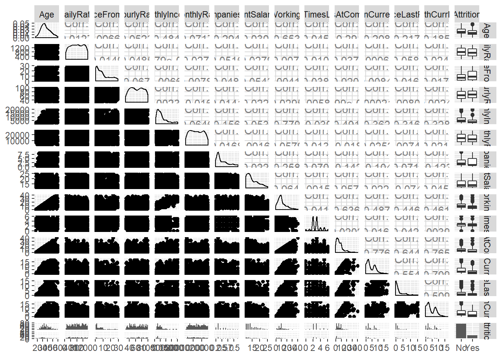
##MLR model to predict salary
SalaryPrediction_model = lm(MonthlyIncome ~ TotalWorkingYears + JobRole + Department + Gender+ BusinessTravel + DailyRate + JobLevel + PerformanceRating ,data = CaseStudy2_reorg)
summary(SalaryPrediction_model)##
## Call:
## lm(formula = MonthlyIncome ~ TotalWorkingYears + JobRole + Department +
## Gender + BusinessTravel + DailyRate + JobLevel + PerformanceRating,
## data = CaseStudy2_reorg)
##
## Residuals:
## Min 1Q Median 3Q Max
## -3242.8 -640.1 -91.6 605.2 4130.8
##
## Coefficients:
## Estimate Std. Error t value Pr(>|t|)
## (Intercept) 2.907e+03 4.775e+02 6.088 1.73e-09
## TotalWorkingYears 4.633e+01 7.734e+00 5.991 3.08e-09
## JobRoleHuman Resources -8.866e+02 4.877e+02 -1.818 0.06944
## JobRoleLaboratory Technician -1.237e+03 1.743e+02 -7.099 2.66e-12
## JobRoleManager 3.671e+03 2.809e+02 13.071 < 2e-16
## JobRoleManufacturing Director 1.304e+02 1.576e+02 0.827 0.40849
## JobRoleResearch Director 3.510e+03 2.106e+02 16.668 < 2e-16
## JobRoleResearch Scientist -1.031e+03 1.775e+02 -5.806 9.06e-09
## JobRoleSales Executive 5.554e+02 3.360e+02 1.653 0.09871
## JobRoleSales Representative -6.725e+02 3.784e+02 -1.777 0.07586
## DepartmentResearch & Development 2.344e+02 4.181e+02 0.561 0.57521
## DepartmentSales -3.359e+02 4.274e+02 -0.786 0.43212
## GenderMale 8.790e+01 6.977e+01 1.260 0.20808
## BusinessTravelTravel_Frequently 2.025e+02 1.318e+02 1.537 0.12476
## BusinessTravelTravel_Rarely 3.466e+02 1.116e+02 3.104 0.00197
## DailyRate 1.799e-01 8.512e-02 2.113 0.03488
## JobLevel2 1.707e+03 1.386e+02 12.316 < 2e-16
## JobLevel3 4.921e+03 1.863e+02 26.421 < 2e-16
## JobLevel4 8.237e+03 2.812e+02 29.293 < 2e-16
## JobLevel5 1.089e+04 3.331e+02 32.694 < 2e-16
## PerformanceRating4 -1.213e+02 9.528e+01 -1.274 0.20316
##
## (Intercept) ***
## TotalWorkingYears ***
## JobRoleHuman Resources .
## JobRoleLaboratory Technician ***
## JobRoleManager ***
## JobRoleManufacturing Director
## JobRoleResearch Director ***
## JobRoleResearch Scientist ***
## JobRoleSales Executive .
## JobRoleSales Representative .
## DepartmentResearch & Development
## DepartmentSales
## GenderMale
## BusinessTravelTravel_Frequently
## BusinessTravelTravel_Rarely **
## DailyRate *
## JobLevel2 ***
## JobLevel3 ***
## JobLevel4 ***
## JobLevel5 ***
## PerformanceRating4
## ---
## Signif. codes: 0 '***' 0.001 '**' 0.01 '*' 0.05 '.' 0.1 ' ' 1
##
## Residual standard error: 999 on 849 degrees of freedom
## Multiple R-squared: 0.9539, Adjusted R-squared: 0.9528
## F-statistic: 877.8 on 20 and 849 DF, p-value: < 2.2e-16confint(SalaryPrediction_model)## 2.5 % 97.5 %
## (Intercept) 1.969774e+03 3844.175690
## TotalWorkingYears 3.115383e+01 61.512561
## JobRoleHuman Resources -1.843850e+03 70.670375
## JobRoleLaboratory Technician -1.578941e+03 -894.911572
## JobRoleManager 3.119982e+03 4222.532785
## JobRoleManufacturing Director -1.790354e+02 439.739256
## JobRoleResearch Director 3.096300e+03 3922.873825
## JobRoleResearch Scientist -1.379119e+03 -682.213109
## JobRoleSales Executive -1.040827e+02 1214.811677
## JobRoleSales Representative -1.415211e+03 70.134842
## DepartmentResearch & Development -5.861673e+02 1054.901016
## DepartmentSales -1.174733e+03 502.948291
## GenderMale -4.904708e+01 224.854574
## BusinessTravelTravel_Frequently -5.615210e+01 461.095028
## BusinessTravelTravel_Rarely 1.274566e+02 565.702078
## DailyRate 1.280073e-02 0.346937
## JobLevel2 1.434890e+03 1978.931786
## JobLevel3 4.555749e+03 5286.955810
## JobLevel4 7.684796e+03 8788.600674
## JobLevel5 1.023574e+04 11543.236008
## PerformanceRating4 -3.083533e+02 65.662774#Cross Validation
set.seed(7)
TrainObs = sample(seq(1,dim(CaseStudy2_reorg)[1]),round(.75*dim(CaseStudy2_reorg)[1]),replace = FALSE)
SalaryTrain = CaseStudy2_reorg[TrainObs,]
SalaryTrain## BusinessTravel Department Education EducationField
## 298 Travel_Frequently Research & Development 3 Life Sciences
## 467 Travel_Rarely Sales 4 Life Sciences
## 415 Travel_Frequently Sales 2 Marketing
## 476 Travel_Frequently Sales 4 Marketing
## 615 Travel_Rarely Sales 2 Other
## 706 Non-Travel Sales 2 Life Sciences
## 783 Travel_Rarely Human Resources 2 Human Resources
## 218 Travel_Frequently Research & Development 3 Medical
## 630 Travel_Rarely Research & Development 3 Medical
## 392 Travel_Rarely Sales 3 Marketing
## 835 Non-Travel Research & Development 1 Medical
## 472 Travel_Frequently Research & Development 2 Life Sciences
## 168 Travel_Rarely Research & Development 5 Medical
## 22 Travel_Rarely Sales 1 Marketing
## 431 Travel_Rarely Sales 3 Life Sciences
## 571 Travel_Rarely Sales 3 Marketing
## 90 Travel_Rarely Sales 4 Marketing
## 268 Travel_Rarely Research & Development 4 Life Sciences
## 808 Travel_Rarely Research & Development 1 Medical
## 287 Travel_Rarely Research & Development 1 Life Sciences
## 207 Travel_Rarely Sales 3 Marketing
## 134 Travel_Rarely Research & Development 3 Medical
## 400 Travel_Frequently Research & Development 1 Medical
## 150 Travel_Rarely Research & Development 3 Medical
## 187 Travel_Frequently Research & Development 1 Life Sciences
## 533 Travel_Rarely Research & Development 2 Life Sciences
## 282 Travel_Rarely Research & Development 3 Medical
## 215 Travel_Rarely Research & Development 4 Medical
## 612 Non-Travel Research & Development 4 Other
## 678 Travel_Frequently Research & Development 3 Technical Degree
## 248 Travel_Rarely Sales 4 Medical
## 171 Travel_Rarely Sales 5 Marketing
## EnvironmentSatisfaction Gender JobInvolvement JobLevel
## 298 1 Male 1 2
## 467 3 Male 3 1
## 415 4 Female 1 1
## 476 1 Male 3 2
## 615 3 Male 3 3
## 706 4 Male 3 2
## 783 4 Male 3 1
## 218 4 Female 3 4
## 630 4 Female 2 3
## 392 3 Female 2 2
## 835 4 Male 2 4
## 472 4 Male 2 1
## 168 1 Female 4 4
## 22 2 Male 4 2
## 431 4 Male 3 2
## 571 3 Female 3 2
## 90 2 Female 3 5
## 268 4 Male 3 1
## 808 3 Male 3 1
## 287 4 Male 3 1
## 207 1 Female 1 2
## 134 4 Male 3 2
## 400 2 Male 3 3
## 150 2 Female 1 2
## 187 4 Male 4 2
## 533 3 Male 4 1
## 282 4 Male 3 1
## 215 1 Male 2 1
## 612 1 Female 2 2
## 678 4 Female 3 2
## 248 2 Male 2 1
## 171 3 Male 3 2
## JobRole JobSatisfaction MaritalStatus OverTime
## 298 Laboratory Technician 3 Single Yes
## 467 Sales Representative 4 Single Yes
## 415 Sales Representative 3 Divorced No
## 476 Sales Executive 4 Single Yes
## 615 Sales Executive 3 Divorced No
## 706 Sales Executive 4 Single No
## 783 Human Resources 2 Divorced Yes
## 218 Manager 4 Divorced No
## 630 Healthcare Representative 2 Single No
## 392 Sales Executive 4 Married Yes
## 835 Healthcare Representative 2 Divorced Yes
## 472 Research Scientist 4 Single Yes
## 168 Research Director 3 Divorced No
## 22 Sales Executive 2 Married No
## 431 Sales Executive 3 Single Yes
## 571 Sales Executive 2 Married No
## 90 Manager 1 Single No
## 268 Laboratory Technician 2 Single No
## 808 Research Scientist 4 Married No
## 287 Research Scientist 2 Single Yes
## 207 Sales Executive 3 Single No
## 134 Manufacturing Director 2 Married No
## 400 Manufacturing Director 3 Single Yes
## 150 Manufacturing Director 1 Divorced No
## 187 Manufacturing Director 3 Divorced No
## 533 Research Scientist 3 Married No
## 282 Laboratory Technician 1 Single Yes
## 215 Research Scientist 4 Single No
## 612 Healthcare Representative 3 Single Yes
## 678 Laboratory Technician 3 Married No
## 248 Sales Representative 2 Married No
## 171 Sales Executive 4 Divorced No
## PerformanceRating RelationshipSatisfaction StockOptionLevel
## 298 4 4 0
## 467 4 4 0
## 415 3 4 1
## 476 4 3 0
## 615 3 1 1
## 706 3 4 0
## 783 3 3 1
## 218 3 2 1
## 630 3 2 0
## 392 3 3 1
## 835 3 4 1
## 472 4 2 0
## 168 3 3 1
## 22 3 4 0
## 431 3 1 0
## 571 4 3 1
## 90 3 4 0
## 268 3 1 0
## 808 4 1 2
## 287 4 1 0
## 207 3 2 0
## 134 4 3 0
## 400 3 2 0
## 150 4 2 1
## 187 3 3 2
## 533 4 3 1
## 282 3 3 0
## 215 3 4 0
## 612 3 1 0
## 678 3 1 1
## 248 3 2 1
## 171 4 4 1
## WorkLifeBalance Age DailyRate DistanceFromHome HourlyRate
## 298 3 34 658 7 66
## 467 2 36 1157 2 70
## 415 2 34 296 6 33
## 476 3 46 1211 5 98
## 615 4 30 231 8 62
## 706 3 41 267 10 56
## 783 4 33 1075 3 57
## 218 3 48 117 22 58
## 630 4 34 1442 9 46
## 392 2 26 1443 23 47
## 835 3 55 177 8 37
## 472 2 29 459 24 73
## 168 3 33 922 1 95
## 22 3 48 817 2 56
## 431 3 27 1377 2 74
## 571 3 41 337 8 54
## 90 2 46 705 2 83
## 268 3 32 1259 2 95
## 808 3 22 1256 19 80
## 287 3 22 391 7 75
## 207 2 43 1372 9 85
## 134 3 39 492 12 66
## 400 2 44 1193 2 86
## 150 2 28 580 27 39
## 187 3 25 772 2 77
## 533 3 29 1252 23 81
## 282 3 41 263 6 59
## 215 3 27 1115 3 54
## 612 3 41 509 2 62
## 678 4 40 692 11 73
## 248 3 32 234 1 68
## 171 2 30 501 27 99
## MonthlyIncome MonthlyRate NumCompaniesWorked PercentSalaryHike
## 298 6074 22887 1 24
## 467 2644 17001 3 21
## 415 2351 12253 0 16
## 476 5772 20445 4 21
## 615 7264 9977 5 11
## 706 6230 13430 7 14
## 783 2277 22650 3 11
## 218 17174 2437 3 11
## 630 8621 17654 1 14
## 392 4157 21436 7 19
## 835 13577 25592 1 15
## 472 2439 14753 1 24
## 168 16184 22578 4 19
## 22 8120 18597 3 12
## 431 4478 5242 1 11
## 571 4393 26841 5 21
## 90 18947 22822 3 12
## 268 1393 24852 1 12
## 808 2323 11992 1 24
## 287 2472 26092 1 23
## 207 5346 9489 8 13
## 134 5295 7693 4 21
## 400 10209 19719 5 18
## 150 4877 20460 0 21
## 187 5206 4973 1 17
## 533 2700 23779 1 24
## 282 4721 3119 2 13
## 215 2045 15174 0 13
## 612 6811 2112 2 17
## 678 6323 26849 1 11
## 248 2269 18024 0 14
## 171 5304 25275 7 23
## TotalWorkingYears TrainingTimesLastYear YearsAtCompany
## 298 9 3 9
## 467 7 3 3
## 415 3 3 2
## 476 14 4 9
## 615 10 2 8
## 706 16 3 14
## 783 7 4 4
## 218 24 3 22
## 630 9 3 8
## 392 5 2 2
## 835 34 3 33
## 472 1 3 1
## 168 10 2 6
## 22 12 3 2
## 431 5 3 5
## 571 14 3 5
## 90 22 2 2
## 268 1 2 1
## 808 2 6 2
## 287 1 2 1
## 207 7 2 4
## 134 7 3 5
## 400 16 2 2
## 150 6 5 5
## 187 7 6 7
## 533 10 3 10
## 282 20 3 18
## 215 5 0 4
## 612 10 3 8
## 678 10 2 10
## 248 3 2 2
## 171 10 2 8
## YearsInCurrentRole YearsSinceLastPromotion YearsWithCurrManager
## 298 7 0 6
## 467 2 1 2
## 415 2 1 0
## 476 6 0 8
## 615 4 7 7
## 706 3 1 10
## 783 3 0 3
## 218 17 4 7
## 630 7 7 7
## 392 2 0 0
## 835 9 15 0
## 472 0 1 0
## 168 1 0 5
## 22 2 2 2
## 431 4 0 4
## 571 4 1 4
## 90 2 2 1
## 268 0 0 0
## 808 2 2 2
## 287 0 0 0
## 207 3 1 3
## 134 4 1 0
## 400 2 2 2
## 150 3 0 0
## 187 7 0 7
## 533 7 0 7
## 282 13 2 17
## 215 2 1 1
## 612 7 0 7
## 678 9 9 4
## 248 2 2 2
## 171 7 7 7
## Attrition
## 298 Yes
## 467 No
## 415 Yes
## 476 No
## 615 No
## 706 No
## 783 No
## 218 No
## 630 No
## 392 No
## 835 No
## 472 Yes
## 168 No
## 22 No
## 431 No
## 571 No
## 90 No
## 268 Yes
## 808 No
## 287 Yes
## 207 Yes
## 134 No
## 400 No
## 150 No
## 187 No
## 533 No
## 282 No
## 215 No
## 612 No
## 678 No
## 248 No
## 171 No
## [ reached 'max' / getOption("max.print") -- omitted 620 rows ]SalaryTest = CaseStudy2_reorg[-TrainObs,]
SalaryTest## BusinessTravel Department Education EducationField
## 8 Travel_Rarely Sales 4 Life Sciences
## 12 Non-Travel Human Resources 2 Life Sciences
## 13 Travel_Rarely Research & Development 3 Other
## 15 Travel_Rarely Human Resources 2 Life Sciences
## 19 Travel_Rarely Research & Development 4 Medical
## 23 Travel_Frequently Research & Development 5 Medical
## 25 Travel_Rarely Research & Development 3 Life Sciences
## 31 Travel_Frequently Sales 2 Medical
## 42 Travel_Rarely Sales 2 Technical Degree
## 46 Travel_Frequently Research & Development 2 Medical
## 51 Travel_Rarely Research & Development 1 Life Sciences
## 54 Non-Travel Research & Development 2 Life Sciences
## 56 Travel_Rarely Research & Development 4 Life Sciences
## 59 Non-Travel Research & Development 4 Medical
## 63 Travel_Rarely Sales 2 Life Sciences
## 69 Travel_Frequently Research & Development 3 Medical
## 76 Travel_Frequently Research & Development 2 Medical
## 93 Travel_Rarely Research & Development 2 Other
## 101 Travel_Rarely Research & Development 1 Life Sciences
## 103 Non-Travel Sales 4 Marketing
## 104 Travel_Rarely Research & Development 3 Medical
## 108 Travel_Rarely Human Resources 4 Human Resources
## 110 Travel_Rarely Research & Development 3 Technical Degree
## 111 Travel_Frequently Research & Development 3 Life Sciences
## 114 Non-Travel Research & Development 4 Life Sciences
## 117 Travel_Rarely Sales 4 Life Sciences
## 118 Travel_Rarely Research & Development 2 Other
## 120 Travel_Rarely Research & Development 4 Technical Degree
## 123 Travel_Rarely Sales 3 Marketing
## 127 Travel_Frequently Research & Development 1 Life Sciences
## 130 Travel_Rarely Sales 3 Technical Degree
## 131 Travel_Rarely Sales 3 Medical
## EnvironmentSatisfaction Gender JobInvolvement JobLevel
## 8 4 Female 2 2
## 12 3 Male 3 1
## 13 3 Male 3 3
## 15 4 Female 3 1
## 19 4 Male 4 1
## 23 4 Male 3 2
## 25 2 Female 2 2
## 31 4 Male 1 2
## 42 2 Male 1 2
## 46 1 Female 3 1
## 51 3 Female 3 1
## 54 3 Male 3 2
## 56 3 Male 3 1
## 59 1 Female 3 3
## 63 1 Male 3 1
## 69 2 Male 3 1
## 76 3 Female 3 2
## 93 4 Male 2 1
## 101 2 Male 3 1
## 103 3 Female 3 2
## 104 1 Male 4 1
## 108 3 Male 4 5
## 110 4 Male 3 1
## 111 3 Male 2 1
## 114 4 Female 3 2
## 117 3 Male 3 2
## 118 4 Male 2 2
## 120 3 Female 3 2
## 123 4 Male 3 3
## 127 2 Female 1 1
## 130 1 Female 4 4
## 131 1 Male 2 2
## JobRole JobSatisfaction MaritalStatus OverTime
## 8 Sales Executive 4 Divorced Yes
## 12 Human Resources 4 Divorced No
## 13 Manufacturing Director 3 Single No
## 15 Human Resources 1 Single No
## 19 Research Scientist 4 Married Yes
## 23 Laboratory Technician 3 Divorced Yes
## 25 Healthcare Representative 4 Single No
## 31 Sales Executive 4 Divorced No
## 42 Sales Representative 3 Single No
## 46 Laboratory Technician 4 Single No
## 51 Research Scientist 1 Single No
## 54 Laboratory Technician 2 Married No
## 56 Laboratory Technician 1 Divorced No
## 59 Research Director 4 Divorced Yes
## 63 Sales Representative 3 Married No
## 69 Research Scientist 1 Married No
## 76 Laboratory Technician 4 Single No
## 93 Laboratory Technician 3 Single Yes
## 101 Laboratory Technician 1 Married No
## 103 Sales Executive 3 Married No
## 104 Research Scientist 1 Married No
## 108 Manager 2 Married Yes
## 110 Research Scientist 1 Single No
## 111 Research Scientist 3 Divorced Yes
## 114 Healthcare Representative 1 Divorced No
## 117 Sales Executive 4 Single No
## 118 Laboratory Technician 2 Married Yes
## 120 Healthcare Representative 4 Single No
## 123 Sales Executive 1 Divorced Yes
## 127 Research Scientist 1 Single Yes
## 130 Sales Executive 1 Divorced No
## 131 Sales Executive 2 Divorced Yes
## PerformanceRating RelationshipSatisfaction StockOptionLevel
## 8 3 3 3
## 12 3 2 1
## 13 4 2 0
## 15 3 3 0
## 19 3 1 3
## 23 3 2 1
## 25 3 1 0
## 31 3 4 3
## 42 3 1 0
## 46 3 3 0
## 51 3 4 0
## 54 3 2 0
## 56 4 2 2
## 59 3 1 2
## 63 3 3 1
## 69 3 4 1
## 76 4 4 0
## 93 3 2 0
## 101 3 2 0
## 103 3 1 1
## 104 3 1 1
## 108 3 1 1
## 110 3 4 0
## 111 3 4 1
## 114 3 1 1
## 117 3 2 0
## 118 3 1 1
## 120 3 4 0
## 123 3 3 1
## 127 4 2 0
## 130 3 4 1
## 131 3 2 1
## WorkLifeBalance Age DailyRate DistanceFromHome HourlyRate
## 8 3 37 309 10 88
## 12 3 28 280 1 43
## 13 4 35 950 7 59
## 15 4 46 991 1 44
## 19 3 34 181 2 97
## 23 3 43 1001 9 72
## 25 3 33 1069 1 42
## 31 4 32 689 9 35
## 42 3 45 954 2 46
## 46 3 42 748 9 74
## 51 2 38 362 1 43
## 54 2 45 805 4 57
## 56 3 41 548 9 94
## 59 3 37 728 1 80
## 63 3 31 1154 2 54
## 69 2 35 664 1 79
## 76 3 30 721 1 58
## 93 3 37 1373 2 92
## 101 4 27 1377 11 91
## 103 3 34 1381 4 72
## 104 4 23 885 4 58
## 108 3 55 189 26 71
## 110 3 32 529 2 78
## 111 3 28 773 6 39
## 114 4 35 1225 2 61
## 117 3 25 1356 10 57
## 118 3 29 1378 13 46
## 120 4 34 404 2 98
## 123 3 45 930 9 74
## 127 3 32 1125 16 72
## 130 3 46 1319 3 45
## 131 2 29 991 5 43
## MonthlyIncome MonthlyRate NumCompaniesWorked PercentSalaryHike
## 8 6694 24223 2 14
## 12 2706 10494 1 15
## 13 10221 18869 3 21
## 15 3423 22957 6 12
## 19 2932 5586 0 14
## 23 5679 19627 3 13
## 25 6949 12291 0 14
## 31 4668 22812 0 17
## 42 6632 12388 0 13
## 46 3673 16458 1 13
## 51 2619 14561 3 17
## 54 4447 23163 1 12
## 56 2289 20520 1 20
## 59 13603 11677 2 18
## 63 3067 6393 0 19
## 69 2194 5868 4 13
## 76 4011 10781 1 23
## 93 2090 2396 6 15
## 101 2099 7679 0 14
## 103 6538 12740 9 15
## 104 2819 8544 2 16
## 108 19636 25811 4 18
## 110 2439 11288 1 14
## 111 2703 22088 1 14
## 114 5093 4761 2 11
## 117 4950 20623 0 14
## 118 4025 23679 4 13
## 120 6687 6163 1 11
## 123 10761 19239 4 12
## 127 3919 4681 1 22
## 130 13225 7739 2 12
## 131 4187 3356 1 13
## TotalWorkingYears TrainingTimesLastYear YearsAtCompany
## 8 8 5 1
## 12 3 2 3
## 13 17 3 8
## 15 10 3 7
## 19 6 3 5
## 23 10 3 8
## 25 6 3 5
## 31 9 2 8
## 42 9 3 8
## 46 12 3 12
## 51 8 3 0
## 54 9 5 9
## 56 5 2 5
## 59 15 2 5
## 63 3 1 2
## 69 5 2 3
## 76 12 2 12
## 93 7 3 0
## 101 6 3 5
## 103 6 3 3
## 104 5 3 3
## 108 35 0 10
## 110 4 4 4
## 111 3 2 3
## 114 16 2 1
## 117 5 4 4
## 118 10 2 4
## 120 14 2 14
## 123 18 2 5
## 127 10 5 10
## 130 25 5 19
## 131 10 3 10
## YearsInCurrentRole YearsSinceLastPromotion YearsWithCurrManager
## 8 0 0 0
## 12 2 2 2
## 13 5 1 6
## 15 6 5 7
## 19 0 1 2
## 23 7 4 7
## 25 0 1 4
## 31 7 0 7
## 42 7 3 1
## 46 9 5 8
## 51 0 0 0
## 54 7 0 8
## 56 3 0 4
## 59 2 0 2
## 63 2 1 2
## 69 2 1 2
## 76 8 3 7
## 93 0 0 0
## 101 0 1 4
## 103 2 1 2
## 104 2 0 2
## 108 9 1 4
## 110 2 1 2
## 111 1 0 2
## 114 0 0 0
## 117 3 1 1
## 118 3 0 3
## 120 11 4 11
## 123 4 0 2
## 127 2 6 7
## 130 17 2 8
## 131 0 0 9
## Attrition
## 8 No
## 12 No
## 13 No
## 15 No
## 19 No
## 23 No
## 25 No
## 31 No
## 42 No
## 46 No
## 51 No
## 54 No
## 56 No
## 59 No
## 63 No
## 69 No
## 76 No
## 93 Yes
## 101 No
## 103 No
## 104 No
## 108 No
## 110 No
## 111 No
## 114 No
## 117 No
## 118 No
## 120 No
## 123 No
## 127 Yes
## 130 No
## 131 No
## [ reached 'max' / getOption("max.print") -- omitted 186 rows ]model1_fit =
SalaryPrediction_model = lm(MonthlyIncome ~ TotalWorkingYears + JobRole + Department + Gender+ BusinessTravel + DailyRate + JobLevel + PerformanceRating ,data = SalaryTrain)
summary(model1_fit)##
## Call:
## lm(formula = MonthlyIncome ~ TotalWorkingYears + JobRole + Department +
## Gender + BusinessTravel + DailyRate + JobLevel + PerformanceRating,
## data = SalaryTrain)
##
## Residuals:
## Min 1Q Median 3Q Max
## -3327.0 -640.8 -58.5 574.0 3989.8
##
## Coefficients:
## Estimate Std. Error t value Pr(>|t|)
## (Intercept) 2508.6185 560.9220 4.472 9.18e-06
## TotalWorkingYears 43.9559 8.7586 5.019 6.78e-07
## JobRoleHuman Resources -690.2406 568.6585 -1.214 0.22528
## JobRoleLaboratory Technician -1100.6308 211.8901 -5.194 2.78e-07
## JobRoleManager 3811.7848 332.0809 11.478 < 2e-16
## JobRoleManufacturing Director 147.7489 189.6050 0.779 0.43613
## JobRoleResearch Director 3535.4086 257.0107 13.756 < 2e-16
## JobRoleResearch Scientist -915.7924 213.0802 -4.298 2.00e-05
## JobRoleSales Executive 596.7376 396.0050 1.507 0.13234
## JobRoleSales Representative -638.7687 444.5440 -1.437 0.15124
## DepartmentResearch & Development 402.5007 490.0007 0.821 0.41171
## DepartmentSales -157.1946 497.4431 -0.316 0.75210
## GenderMale 117.6691 82.7057 1.423 0.15530
## BusinessTravelTravel_Frequently 207.6181 158.3999 1.311 0.19043
## BusinessTravelTravel_Rarely 397.3708 134.8792 2.946 0.00334
## DailyRate 0.2854 0.1004 2.844 0.00461
## JobLevel2 1833.9818 162.1315 11.312 < 2e-16
## JobLevel3 4989.8348 216.9193 23.003 < 2e-16
## JobLevel4 8419.3163 328.2446 25.650 < 2e-16
## JobLevel5 10951.1874 388.8736 28.161 < 2e-16
## PerformanceRating4 -130.5792 113.3390 -1.152 0.24971
##
## (Intercept) ***
## TotalWorkingYears ***
## JobRoleHuman Resources
## JobRoleLaboratory Technician ***
## JobRoleManager ***
## JobRoleManufacturing Director
## JobRoleResearch Director ***
## JobRoleResearch Scientist ***
## JobRoleSales Executive
## JobRoleSales Representative
## DepartmentResearch & Development
## DepartmentSales
## GenderMale
## BusinessTravelTravel_Frequently
## BusinessTravelTravel_Rarely **
## DailyRate **
## JobLevel2 ***
## JobLevel3 ***
## JobLevel4 ***
## JobLevel5 ***
## PerformanceRating4
## ---
## Signif. codes: 0 '***' 0.001 '**' 0.01 '*' 0.05 '.' 0.1 ' ' 1
##
## Residual standard error: 1020 on 631 degrees of freedom
## Multiple R-squared: 0.9532, Adjusted R-squared: 0.9517
## F-statistic: 642.8 on 20 and 631 DF, p-value: < 2.2e-16#Prediction Salary(MonthlyIncome) for the CaseStudy2 dataset with NO Salary
CaseStudy2CompSet_NO_Salary$SalaryPreds = predict(SalaryPrediction_model,newdata = CaseStudy2CompSet_NO_Salary)
view(CaseStudy2CompSet_NO_Salary)
#Create dataframe with ID and Salary Predictions only
ID_SalaryPreds_Dataframe <- CaseStudy2CompSet_NO_Salary[,c("ID","SalaryPreds")]
ID_SalaryPreds_Dataframe## # A tibble: 300 x 2
## ID SalaryPreds
## <dbl> <dbl>
## 1 871 5690.
## 2 872 2744.
## 3 873 13014.
## 4 874 2403.
## 5 875 3005.
## 6 876 5152.
## 7 877 5465.
## 8 878 2047.
## 9 879 3004.
## 10 880 13551.
## # ... with 290 more rows#Save data to CSV file
write.table(ID_SalaryPreds_Dataframe,"Case2PredictionsDebouseSalary.csv",sep = ",",row.names = FALSE)